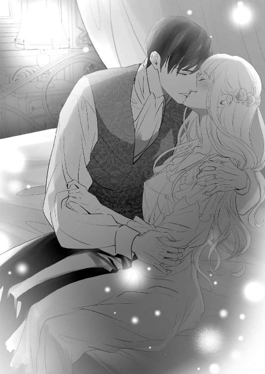
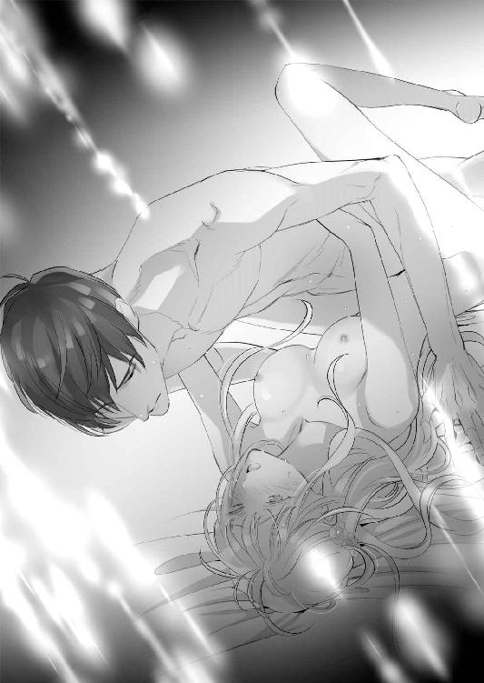
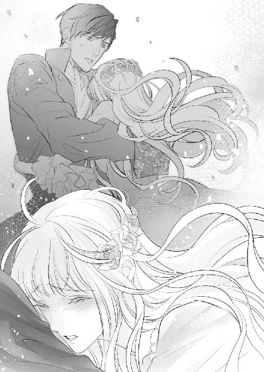

| 単身赴任の旦那様と6年ぶりの溺愛生活 (LUNA文庫) | |
| 深森 ゆうか | |
| 天海社／LUNA文庫 (2018) | |
単身赴任の旦那様と６年ぶりの溺愛生活
［著者］深森ゆうか
［イラスト］天路ゆうつづ
プロローグ
シオンの目の前に立っている少女は、ひどくやせ細っていた。
緩やかに波打つ淡褐色の髪は栄養が行き渡らず、まるで枯れ枝のような有様。
細さを隠すためなのか、夏なのに長袖のドレスに身を包んではいるが、何もかもがブカブカで、腰回りの赤いサテン生地など余ってしまい、何度か巻いたようだ。
痩けた頬には生気がない。
もっともシオンの目についたのは、彼女――リオナの死んだような眼差しだった。
ダークグリーンの瞳は虚ろで、シオンと目を合わせないよう自分の足下を見つめている。
「リオナ・ブライトンかな？」
シオンは顔に笑みを乗せて彼女を刺激しないよう、「これでもか」と優しく問いかける。
けれど、それでもリオナは肩を大きく震わせた。
「は......はい」
彼女は恐れに縮み上がったまま、ゆっくりとシオンに顔を向ける。
虚ろだった瞳には、恐怖の色が乗っていた。
（可哀想に......）
人がすべて恐怖の対象だなんて。
齢十二だと聞いている。今までどんな辛い生活を強いられてきたのだろう。
同時――ここまでひどい有様になって、ようやく助けを求めてきた友人のトビアスに怒りが湧き上がってきた。
「トビアス！ お前、自分の妹をよくここまで放置できたな！ 見損なったぞ！」
その怒りはトビアスだけではなく、彼の母親にも向けられた。
「ブライトン夫人！ いくら自分の血を引かないからと、孤児よりひどい扱いをして！ 貴女には人の情がないようだ！」
「亡き夫が手を付けた素性のわからぬ女の子供なんて、知ったことではありませんよ。むしろ我が家に住まわせてやったことに、感謝してもらいたいくらいですわ」
憎々しげに言い返してくる夫人に、シオンはグレーの瞳で鋭く睨みつけた。
日頃、温厚をそのまま描いたような彼が、ここまで激怒するのを見たことがないトビアスは、母であるブライトン夫人の横でオロオロするばかりだ。
「わたくしは貴方が『リオナという女性を是非、妻に』という要望に応えたのですから、支度金を置いてその子を連れてさっさと出ていってちょうだい」
そう忌まわしげに言ってきた夫人に、腰巾着のようにまとわりついていたもう一人の少女も、
「そーよ。こっちは、その子のせいで迷惑していたんだから」
と舌を出しながら夫人の加勢をする。
こっちは夫人の娘か、と睨みつけると少女は「ひっ」と引きつった声を出して夫人の後ろに引っ込んだ。
「トビアスの口添えだから、仕方なくその子をクリフォード家に嫁がせますけれどね。こっちは使用人として使っていた分、家のことが回らなくなるんですよ。まあ支度金で、もっと手際よく働いてくれる女中を雇うつもりですけれど」
夫人はクリフォード家の使用人達が運んでくる収納箱をチラリと見やり、嫌らしい笑みを浮かべる。
「おや、貧乏男爵のわりには思い切った支度金ですこと。まあ、せいぜいその子を可愛がってやることね」
確かに男爵だが貧乏じゃない！ ――と、怒鳴りたくなったが、強突く張りだと聞いて事前にクリフォード家の生活は困窮していると、トビアスが嘘の情報を流してくれたことが無駄になってしまう。
トビアスが「このままでは腹違いの妹が死んでしまう。その前に家から出したいんだ。協力してくれ！」と頭を下げて頼んできた。
伯爵のトビアスと男爵のシオン。爵位は違うが互いに父が早世して、早くに家長となった者同士で仲良くやっていた。
お互い穏やかで、争いを好まなかったせいか気が合った。
しかし――いくら争いを好まないと言って、家庭内の差別や虐待まで止められないとは......
シオンはグッと堪え、形だけの礼を取る。
「では――これで、リオナ嬢は我がクリフォード家の花嫁としてお迎えいたします。以後、彼女との接触は僕か母。またはクリフォード家の家宰を通してください」
「ご心配には及びませんよ。二度とその子の顔なんて見たいと思いませんから」
夫人は冷ややかな意地の悪い笑みを浮かべて、そう言い放った。
もう用はない、とシオンは必死に怒りを抑えブライトン家を去る――リオナを連れて。
そうして――リオナはクリフォード家に「花嫁」として迎え入れられた。
第一章 仮初め夫婦のそれぞれの思惑
ここクリフォード家では、朝から総出でバタバタと忙しく動いていた。
何せ――ここの当主であるシオン・クリフォードが六年ぶりに帰ってくるのだ。
「朝の伝達で、今日の午後には帰ってくるとのことだから。息子の好物をたんと作ってあげてちょうだい」
「ええ、もちろんですとも。シオン様の大好物の雉肉のパイ包みも、ちゃんと仕込み済みです」
そう誇らしげに答える料理長にシオンの母アマンダは嬉しそうに頷く。
「あと、デザートは洋酒に漬け込んだオレンジを入れたケーキよね。リオナ」
「はい！ 昨日、焼き上がって味を染み込ませています。夕食時にはきっと食べ頃ですよ」
元気よくリオナは答えた。
「よく、リオナが作った洋酒のケーキを食べたいって手紙にも書いてあったものね。喜ぶわよ」
「今回、とびきり上手に焼けたんです。シオン様、喜んでくれるといいんですけれど......」
「喜びますとも。あの子にとって、リオナが作った物はなんでも美味しいのよ。もちろん、私もリオナの作ったお菓子は、とびきり美味しいと思うわ」
「あ、ありがとうございます」
リオナの頬が、ポッと薔薇色に染まる。
アマンダは、そんなリオナを見て口元を綻ばせた。
七年前に我が家に来た時は、このまま死んでしまうのではないか？ と思うほど痩せこけていて、顔は土気色だった。
いつもビクビクしていて、怯えた目をしていた少女リオナ。
（今は、こんなに美しく成長して......）
枯れた芝のように艶のなかった髪は栄養が行き渡り、艶々で緩やかに腰まで流れている。日の光に当たると、まるで刈り入れ前の麦穂のように輝く。
生気のなかったダークグリーンの大きな瞳は、至玉のようにキラキラと煌めく。
骨と皮しかなかった手足は、ふっくら艶々。年頃の乙女らしくなった。
身体も精神も健康になってくると、リオナは明るい表情をするようになって、顔を上げて対話もできるようになった。
そうなって改めて見ると、リオナは相当な美少女だった。
（たぶん、それもあってあのブライトン夫人は気に入らなかったのね）
いくら妾の子だからと、死ぬ一歩前までいたぶるなんて、人としてどうかと思う。
二度とリオナをブライトン家に戻すもんですか！ とアマンダは鼻息が荒くなる。
「お義母様？ どうしました？ お鼻、痒いのですか？」
「ああ、何でもないの。ちょっと嫌なことを思い出してね」
首を傾げながら、ハンカチを差し出すリオナにニコリと笑いかけると、
「さあ、リオナ！ 夫であるシオンを出迎えるにあたって貴女も、今から磨き上げておかないと！ 到着に間に合わなくなるわ！」
と、手を叩いて女中を呼ぶ。
リオナはドレスの裾を掴み、遠慮がちに言った。
「お義母様。私、これで十分です......」
今のドレスだって動きやすさを重視して裾を短めにしてあるが、普段着としては随分高価な生地を使用し、あつらえたものだ。
「いけません！ 夫をお迎えするのですから。それに六年ぶりでしょう？『こんなに大人になりました』とシオンにお披露目をする意味もあるのよ。それにシオンに綺麗になった貴女を見てもらって『見違えた』と驚かしたいのよ」
「......そうですよね。私、シオン様に一人の女性として見てほしいです」
そうだ、辛い少女時代に手を差し伸べてくれただけでなく、大人になるまで手を出さないと誓い、大切にしてくれたシオン。
形だけの夫婦となって一年目にシオンは、このクレイテス国の第二王子であるヴィクトルが北の土地の砦に赴任する際に、随行員に選ばれた。
シオンは意を決して領地を母とリオナに任せ、同行したのだ。
寂しかったけれど王宮の決定で、王の血を引く男子は必ず北の砦に数年赴任するという伝統がある。現に王太子であるヴィクトルの兄が先に北の砦に赴任して帰ってきた。
その付き添いに選ばれるということは名誉なことであり、このクレイテス国の次世代の重臣候補だということは、間違いはないのだ。
出世街道を進むシオンの妨げになりたくはない。
一緒についていくことも考えたが、まだやせっぽちの、碌に教育されていなかったリオナが内助の功なんてできようはずもない。
それどころか寒い北へ無理矢理ついていって、体調を崩したりでもしたら迷惑でしかない。
――なら、シオン様が帰ってくるまでに貴婦人としての教育を受けて、それからお役に立とう。
そう決意した。
そして――六年経ち、ようやくヴィクトル殿下一行が王都に帰ってくる。
（シオン様......）
湯に浸かり身体を清め、肌によいといわれているオイルを付けてマッサージをする。
それから新調した幾つかのドレスを前に、シオンが帰ってきた時に身を包む物を選んだ。
化粧台にはシオンと文通した最後の手紙が置いてあり、リオナは愛しさにそれを胸に押し当てる。
「どうか私の今の、成長した姿を気に入ってくださるように......」
そう、シオンはもう三十になる。
子供の一人や二人いてもおかしくない。いや、いないとおかしい。
彼はこのクリフォード家の当主だ。
そして、リオナは花盛りの十九歳。
（優しくて素敵な私の旦那様......）
こんな素晴らしい人が私の夫だと思うと、胸がきゅぅん、と鳴って痺れてくる。
乙女らしい胸の痺れに浸りながら、もう一度化粧台の鏡に映る自分を見つめる。
シオンが帰ってくる！ という朗報に義母と喜び合いながら、二人で『ある決意』をした。
そう――帰ってきたら！
（子作り！）
書類上だけでなく、実質的に夫婦となる――それがリオナの決意であり、目標だ。
（神様！ どうかシオン様が、成長した私を好きになってくださるように......！）
リオナは両手を合わせ握り、一心に祈った。
◇◇◇◇◇
そんなクリフォード家の、忙しいながらも嬉しいお迎えの準備前日――
（明日には、クリフォードの領地に戻れるな）
シオンは仮宿として提供してくれた、マルト子爵家の屋敷の一室にいた。
子爵の屋敷とはいえ、大人数で一晩の宿を借りたのだ。部屋数が足りるはずもなく、シオンは数人の者と相部屋だ。
三人は横になれるであろうベッドは早々と満員になり、ソファも然り。
シオンは、床に敷かれた絨毯の上で寝ることにした。
明日には自分の屋敷に戻って、足を伸ばしてゆっくりと寝られる。
そう考えて、ベッドは自ら遠慮した。
王宮までの道程に、自分の領地を横切るのは幸いだった。王宮より反対側の者は、まだまだ殿下と付き合わないといけないので、気が抜けないだろうから。
シオンは絨毯の上で横になる。毛足の長い絨毯なので次の日、身体が痛くなることもなさそうだ。
マルト子爵夫人が気を利かせて、洗い立ての絨毯を敷いてくれたのはありがたい。
「シオン、まだ起きているのか？」
声を落とし、こちらに話しかけてきた者がいた。
ソファを一人で陣取る青年――ヴィクトル殿下だ。
「はい。殿下こそ、まだお休みにならないのですか？」
「ああ、たまにはと思って部下達にベッドを譲ったのはいいが、慣れないせいか寝付けなくてな」
「今から起こして、代わってもらいましょうか？」
「いや、いい。せっかく寝付いているところ、悪いからな」
と、口角を上げて笑顔を見せてくる。
薄暗い中でもいい男だ、とシオンは思う。
柔らかな金髪は緩やかな癖を作り、肩にかかる。
青い瞳は「南海の宝石」と言われるほどの輝きで、端整な顔立ちにピッタリと映える。
眉目秀麗、美男子、男前、水も滴るいい男――言葉を変えても、優れた容姿を持つという意味の文字しか浮かんでこない。
もちろん、顔だけではない。王太子である兄とともに傑出した人物だ。
ただ、一つだけ欠点があった。
『女癖が悪い』のだ。
王宮にいた頃も、独身だろうと既婚者であろうと未亡人であろうと誘い、恋に戯れる。
「誘わないのは失礼」と豪語するくらいだから、目についた女性を手当たり次第に口説いたのだ。
『殿下はこんなお方』と受け流したり、遊びだと割り切れたりできるタイプはいい。
けれど、口説かれて本気になってしまう女性も、少なからずいた。
そうなるのは大抵、何も知らない若い女性が多く――幾つもトラブルを起こしていた。
今回の北方の砦への赴任は、確かに王家直系の通過儀礼であるが、「この女好きがどうにか、少しでも、落ち着けば」という父王や王太子の願いも籠められていた。
傑出した人物のはずなのに、その女癖の悪さのせいで評判が微妙な彼。
殿下のお付きの者は、生真面目で常識があり、正義感や道徳心の強い者を厳選。
その中に、シオンが選ばれたのだ。
そんな者達に囲まれて生活していれば、少しはマシになるだろうと思っての人選方法だと聞いて、納得したシオンだ。
何せ、王宮によくこれだけいたな、と感心するほど頭の固い「超」がつくほどの真面目人間ばかりが勢ぞろいしたのだから。
そうして、かれこれ六年。
北方の砦の任期期間は大抵三年だが、ヴィクトルは倍の六年だった。
そう聞けば、彼の北方での生活の様がお分かりいただけるだろうか？ 想像してくれ！ と言わんばかりの長さになった。
（......陛下よ、殿下の女好きは、頭の固い者で周りを囲って且つ、寂しい北の砦に出向いても治りませんでした。むしろ――）
周囲の部下達が胃炎や脱毛症に悩まされたり、ヴィクトルに感化されて女遊びを覚えたりと大変だった。
経理担当として随行したシオンも、彼の女癖の悪さにどれだけ胃痛を覚えたか。
陛下の方も諦めて、ようやく帰還命令が出た時には、胃炎や脱毛症に悩まされた部下はホッとしていた。
しかし――ヴィクトル殿下は、部下思いの良い人なのだ。そして瞬時に出す判断力といい、決断力といい素晴らしい。
それに剣や武術にも長ける。
知勇兼備に文武両道、それに加えて容姿端麗――これだけ、人として魅力を備えているのに......
（まるで息をするように女性をくどく......そして、いざこざを絶やすことなく発生させる......）
シオンは内心、溜息を吐いた。
この赴任に随行したということは、自分はいずれ王宮の重臣として彼か王太子の傍にいることになる。
慣れるか王宮を去るか――この究極の天秤にシオンは、キリキリと痛む胃に堪えながら彼の女遊びの「後片付け」をした。
――でも、これからは二十四時間彼を監視しなくて済む。目くじらを立てて、ガミガミと叱る必要がなくなる。
いくら言ってもまるで堪えない、まったく耳を貸さない者を相手にすることがなくなるのだ。
それを考えたら、瞬く間に胃痛が治った。
ストレスであった胃痛の原因である本人を目の前にしても、にこやかな対応ができている。
自分は案外、単純なのだろう。
「シオンには大分世話になったな。礼を言う」
「いえ。大変でしたけれど、充実した日々を送ることができました」
社交辞令だ。「いや～本当に！ 何度、雪山に放りだそうと思ったことか！」と言ってやりたいが、向こうは上官の上にこの国の権力者の息子だ。
いくら気さくな方だとて、そんな無礼な物言いでもしたら一族追放になるかもしれない。
「よかったら明日別れる際に、宝物箱から好きな物を一つ持っていくといい」
ヴィクトルの言っている宝物箱の中身は、赴任先で討伐した盗賊から没収したものだ。
気前がいいな、と思いながらもシオンは、
「いえ、国の財産ですし。一度、王に断ってからお願いします」
と答える。
「お前は、相変わらず生真面目だなあ......」
ヴィクトルは、そう呆れたように笑う。
嫌みのないその笑みも魅力で、今までの苦労もそれで流してしまいそうになる破壊力だ。
「まあ、いいさ。ほしくなったらいつでも言ってくれ」
そう言うとヴィクトルは「おやすみ」とシオンに背を向けた。
しばらくして、健やかな寝息が聞こえてくる。
（つかず離れずにいたら、いいお方なのだが......）
女癖が悪くなかったらなぁ、とつくづく残念だ。
――そうでなければ、リオナを紹介できるかもしれないのに。
いや、身分が違う。たとえ殿下の女好きがなくて、そしてリオナが見初められても、彼女にとって王宮内の生活は辛いものになってしまう。
リオナと別れたのは、十三になる前。
ようやく、やせ細った身体に肉がつき始め、自分に懐いてくれた頃だった。
形式上の妻で、シオンは彼女を妻として、いや、女として求めたことなどない。
あのブライトン家からの救出が目的だったし、金と引き替えに幼い少女に手を出すなんて恥知らずなことなどしない。
形だけの結婚生活。
だからこそ――シオンは悩む。
いくら友の頼みだからといって、いきなり妻にするのはいけなかった。
母に相談して養子縁組みで話を進めればよかったのに。いや、そのつもりだった。
「死ぬかも。早く」と、せっぱ詰まって急かせるトビアスに押し切られた。
保養地へ出かけている母への報告は後回しでいい。自分の財産の一部を持ってリオナを引き取ることにしたのだ。
細い身体が恐怖で震えているのを目の前にして、怒りで景色が真っ赤になった。
そのまま性急に婚姻届を出して、認められた。
幸いに保養地から戻ってきた母に責められるどころか「よくやった！」と褒められた。
どうやら二十四になっても好い人のいない息子を、心配していたらしい。
「まだ若いのだから、細いのも教養もこれから何とかなる！」とリオナに随分と肩入れしていた。
（今は確か、十九になるかならないかの年頃なはず）
少女から大人に変貌を遂げているはずだ。
シオンは彼女を、どう扱おうか悩む。
シオンの記憶の中のリオナは以前よりはふくよかになったとはいえ、まだ大きなダークグリーンの瞳がキョロ、と動く細くて小さな少女のままだ。
――果たして俺は、リオナを一人の女性として見れるのか？
たとえ形式上だとしても、縁があって夫婦になった。
戻ったら彼女を敬い、妻として大切にしようという考えはあるが果たして「性的」に見ることができるのだろうか？
頻繁に手紙のやりとりはしていたが、その間、一時帰宅なんてことはしなかったから、リオナが今どうなっているのかだけではなく、クリフォード家の屋敷もどうなっているのかてんで分からない。
手紙のみの報告だ。
六年の間、順番に一時帰宅させてもらえるはずだったが、ヴィクトルに好かれて彼が一時帰宅を許さなかったのだ。
奥歯にものが挟まったような言い方をしない、媚びない、少しの違いもなくきっちりと仕事をする姿が気に入ったと言われた。
そして、ヴィクトルの恋に使う資金の計算もしっかりしている、と。
だから一時期「殿下とできている」なんて噂も立てられたが、互いに男色の気はないのであっという間にたち消えた。
男にまで手癖の悪さがなかったのはホッとした。
（それに......リオナの方は、この六年の間に、他に想い人ができたかもしれないしな......）
それはそれで寂しいが、喜んで父親役を買ってでよう――そう決意してシオンは眠りについた。
第二章 真の夫婦になります
そして、次の日の午後。
「では、殿下。これで失礼いたします」
「うむ。一ヶ月後の夜会には細君を連れて必ず来いよ」
「――はい」
いや、その時には離婚しているかもしれませんけど――なんて思いながらシオンは、恭しく頭を下げた。
ヴィクトル殿下率いる隊列を見送り、クリフォード家から一緒についてきてくれた使用人達に視線を巡らせ「行こうか」と微笑んだ。
皆、肩の力が抜けたのかワイワイと談笑をしながら屋敷へ向かう。
白樺の林を抜けて、クリフォード家の牧場を通り、しばらく馬を闊歩させれば懐かしい我が家が見えてきた。
黒鉄の柵に囲まれた庭には、季節折々の花が咲き乱れるよう美しく整えられている。
芝も短く刈られ、青々とした様子が優しく目に映る。
そして庭の奥に建てられた屋敷――青い屋根にクリーム色の外壁で覆われた二階建ての懐かしい我が家だ。
「六年経ったが......変わってないな」
シオンは、感無量の面持ちで呟いた。
「......本当に」と、使用人達も涙ぐむ。
シオンが目配せすると使用人の一人が鉄柵に取り付けてある、カリヨンを叩いた。
主人が帰ってきたことを知らせるため、リズムを乗せて叩く。
シオンはこの時まで知らなかった。
この後、リオナを取り巻く周囲が大騒動になることを......
「......どなたです？」
たっぷり沈黙した後、屋敷から出てきた女性に尋ねる。
目の前に現れた見目麗しい乙女は、大きなダークグリーンの瞳をパチクリさせてシオンを見上げる。
彼女の方も、シオンに尋ねられて驚いているようだ。
シオンだって驚いている。それも非常に。
（もしかして母の隠し子？ いやいや、亡くなった父の隠し子の方が妥当だろう？）
と、どうにかこの状況を把握しようと必死だった。
（それにしても――）
綺麗な人だ。
太陽に輝く秋の淡い小麦色の髪は緩やかに背中を流れて、飾られたレースと小花がよく似合う。
白くて透けるような肌に、鼻は形良くすっと通り、小さめの口には控えめな色の紅がさしてある。
特にシオンを虜にしたのは――自分を見つめるダークグリーンの大きな瞳だ。
彼女の瞳の中に、くっきりと映る自分の顔。
（こんなにはっきりと映るなんて......。なんて澄んだ瞳なんだろう）
トクトク、と胸が騒ぎ出す。
まずい！ これはいけない胸の鼓動だ。これが異母妹か異父妹だったらどうするんだ!? シオンは無駄に想像力を働かせてしまう。
「お......お帰りなさいませ、シオン様......！」
目の前の乙女が、思い切った様子でシオンに挨拶をする。
――あれ？
と思った。
あまり喋らない子だったので声の記憶は薄いが、確かに聞き覚えのある声......
「リオナ......？」
「はい......っ！ リオナです！ お帰りをお待ちしておりました！」
自分に気付いてくれた嬉しさに、リオナの表情がパアッと光り輝いた。
それはシオンも同じで、
「リオナか！ いや、見違えた！ あんなにやせっぽちだった子が......！」
と、思わず彼女を抱き上げ、高い高いをしてしまう。
「――キャッ！ シ、シオン様......！ あ、あの......！」
ハッと気付く。
そうだ、リオナは現在十九歳。こんな高い高いをして喜ぶ年ではない。
六年前もいい加減、そんな年でもなかったが。
それに――目の前を支配する景観は、それは魅力的に膨らむ二つの双丘。
あまり揺さぶると、ホロリと溢れ落ちそうな具合にまで成長している。
「......あっ、すまない」
そろり、とリオナを下ろす。互いに顔が真っ赤だ。
リオナは、子供扱いされて羞恥に顔が赤く。
シオンは、目の前に現れたお胸が魅力的な――ではなく、魅力的な女性がリオナだったことに動揺して、顔が赤く。
「お帰りなさい、シオン。――まったく、妻に高い高いするとは何事ですか」
ようやく母が出てきて、シオンもリオナもホッとする。
出迎えたアマンダは呆れ顔だが、その顔だって六年ぶりで懐かしくシオンは、
「ただいま戻りました。母上」
と抱擁のキスをした。
「本当に。まったく六年の間、一度も戻ってこないなんて。親不孝な子だこと」
なんて嫌みを言うも、嬉しそうに頬を緩める。
「それは、手紙にもしたためたと思いますが――まあ、確かに親不孝なのは認めます。でも母上なら、しっかり領地の管理をしてくれると信じていましたから」
「私だけではありませんよ。リオナもいたから。彼女には随分助けてもらったわ」
そう、リオナに視線を移す。
「い、いえ......そんなことありません。お義母様の丁寧なご指導のおかげです」
彼女は、慎み深い笑みを見せ頬を染めた。
その奥ゆかしさにもキュンと胸が鳴りシオンは、いてもたってもいられなくなった。
「あ、そうですか......うん、リオナ。どうもありがとう」
「いえ......そんなこと。私、シオン様やお義母様のお役に立ちたくて。ただ、それだけです」
「――中に入ろうか。長旅でさすがに疲れてしまったようで少し休みたくて......食事の時間になったら呼んでくれ」
そうシオンは言うと、さっさと自分の部屋に入ってしまった。
急によそよそしい態度になってしまったシオンに、リオナはたちまちしおれた花のようになってしまった。
「......この格好、お気に召さなかったのでしょうか？」
「とてもよく似合ってるわ。ただ、六年ぶりに再会した妻があまりに綺麗になったから、どうしていいのか分からなくて困っているのよ」
アマンダはそう言って、彼女の肩を優しく撫でた。
「そうでしょうか......」
「さあ、六年の隔たりなんて一気になくなるような食事を用意しましょう！ ――勝負はこれからよ！」
アマンダは、ショボンと肩を落としているリオナを連れて厨房へ向かった。
一方、シオンは自室に戻った途端、ヘナヘナとその場にしゃがみ込んでしまった。
「......困った......」
あんなに美しく成長するとは思っていなかった。
王宮にだってあんな美女、そうそういない。
しかも六年辺境で過ごし、女っ気のない生活をしていたシオンには、リオナの眩しさに目が潰れるかと思った。
ヴィクトル殿下のキラキラしさには慣れたが、男と女でこうも違うのかと驚いた。
思わず抱き締めて、キスをしたくなるほど。
（いきなりそれをしたら変態だ。殿下より悪い！）
殿下さえ、口説きながらしたというのに。自分はそれさえも省略しようとした。
それに――生真面目なだけが取り柄の自分に、見合う相手ではない。
あの輝きは、上流の男達に受け入れられるべきものだ。
（俺ごときが、娶れる相手じゃない）
けれど――
尻込みしているのに、ここまで美しく成長したリオナを見て嬉しい。
このまま自分の妻として、大切に傍におけないか？
とも思ってしまうシオンだった。
◇◇◇◇◇
しかし――
久しぶりの夕餉の団欒でも、シオンはリオナと目を合わすことを避けていた。
それどころか、母のアマンダとばかり話をしている。
アマンダの方もリオナに振って話を広げようとしてくれているのに、そうするとシオンはだんまりになって、黙々と食事を口に運ぶだけ。
食後のデザートに「楽しみにしている」と手紙に書いてあった洋酒のケーキを口の中にかきこむと「疲れた」と早々と自室に戻ってしまった。
これにはさすがのリオナもショックを受けて、その場で項垂れてしまった。
「リオナ......」
アマンダが近付いてきて、彼女は涙目で義母を見つめる。
「私、嫌われてしまったんでしょうか？」
「そんなはずはないわ。リオナがあまりに綺麗になったので、落ち着かないのよ......きっと！」
「でも......私を抱き上げてくれた時から様子がおかしくて......」
「ああ、確かに」とアマンダは、目を皿のようにして彼女の上から下まで調べる。
アマンダが監修して、ドレスも髪型も香りも完璧に仕上げてくれた。
そう、シオン好みに。
リオナの清楚なイメージを壊さず、且つ年頃の色気をも醸し出すように仕立ててくれたのだ。
なのにどうして？
リオナは自分にこの格好は似合わなかったのかと、切なく胸元のレースを弄る。
「――ん？ もしかして」
アマンダはジッと、リオナの弄っている部分に集中する。
「お義母様？」
レースの奥――そう。自分の、ふっくらと盛り上がる胸元に視線が注がれて、リオナも自分の胸の谷間を見つめる。
「そういえば『高い高い』した時、あの子の視線、胸に集中していなかった？」
「そうでしたか？」
リオナが健康を取り戻したと同時、胸まで成長を遂げた。
あのガリガリから、よくここまで成長できたな！ といわんばかりに。
その魅力と成長を見てもらって惚れ直すよう仕向けたドレスが、もしかしたら余計な真似だったのか？
「嫌だわ、あの子......。三十路に入る男が胸を見て動揺するって、どれだけ童貞くさいの!?」
呆れたアマンダが思わず呟く。
本人から赴任先の北の砦での話を聞く限り、女遊びはしていないようだけれど、それにしたって異性を前にした態度にしては落第点だ。
（いいえ、それだけリオナが魅力的だということよね？）
ブツブツ独り言を呟いていたアマンダは、勢いよくリオナの肩を掴む。
「大丈夫よ、リオナ。シオンは照れているだけだわ。このまま計画通りに思い切った行動を取りましょう」
「でも私、自信がなくなりました......」
またショボンと、アマンダから視線を下ろしてしまう。
「リオナはシオンの今の態度で、嫌いになってしまったかしら？」
「――いえ！ 今でも好きです！ お慕いしています！ このままずっと、シオン様のお傍にいたいです！」
あの恐怖の屋敷から、義理だろうと情けだろうと救い出してくれた。
クリフォード家という、恵まれた環境をくれた。
そして――自分がこの家に溶け込むようにと、いつも笑顔で傍にいてくれた。
そんな彼に恋心を抱くのは、ごく自然のことだろう。
彼のために、健康な身体を取り戻した。彼のためにマナーを学び、勉強もした。
本当の夫婦になる、その日を目指して。
「シオンは向こうで、ずっと女性とは縁が無かったことに間違いはないわ。だから成長して女性らしくなったリオナが傍にいることに、動揺が隠せないのよ。これは絶好の機会だわ」
「絶好の機会とは......？」
「今夜が勝負よ！ リオナ！ 貴女が押し倒すくらいに積極的に動くの。でないと、あの子逃げ腰のままだわ」
義母の言う通りかもしれない。
ここで、自分から動かなくてはシオンはずっとよそよそしいままで、もしかすれば他の女性に目がいってしまうかもしれない。
（――そんなの、いや......！）
リオナはコクン、と喉を鳴らし決意を乗せてアマンダを見つめる。
「分かりました！ 今夜、シオン様を誘惑して真の夫婦になります！」
◇◇◇◇◇
義母とメイドに連れられて、リオナはシオンの寝室に潜り込む。
何せ、六年前だって寝室は別だった。
シオンが帰ってくると連絡が来た後、夫婦として一緒に過ごす部屋に、それに繋がる寝室まで用意したのに、シオンは元の自室に閉じこもったまま。
これには義母も、怒りに目をつり上げて鼻息を荒くしていた。
義母が怒りを抑えている時、鼻に怒りが籠もってしまうのだろう。
いつもは内鍵を掛けてあるシオンの寝室だが、彼の部屋に行った際、予め鍵を開けておくようメイドに命じておいたのだ。
そして――
今、リオナは息を潜めるように、シオンのベッドの端に座っている。
シオンがその気になってくれるよう、寝衣も思い切ったものを選んだ。
透けた素材のナイトドレス。
今は薄闇で見えないが、ランプの明かりの中では乳首の色味が微かに覗けて見えてしまって、自分のものだが恥ずかしさに顔を熱くした。
『こう、見えるか見えないかが欲情をそそられるのよ』と義母が言っていたのを信じるしかない。
あとはこうして、シオンが寝所にやってくるのを待つのみ。
（シオン様、私を受け入れてくれるかしら......？）
それどころか、気配を感じて寝所にやって来ないかもしれない。
リオナは悟られないように息を殺して、彼がやってくるのをひたすら待った。
それからしばらくして――扉の開く音がした。
ベッドに近付いてきて、薄闇の中でも目視できるようになる。
シオンだと分かって、リオナは喜びと安堵で顔を紅潮させた。
「リオナ......!?」
「はい！ そうです！ シオン様をお待ちしておりました」
立ち上がり、近付こうとするリオナを驚いた顔で一瞥したシオンは、瞬時に顔を歪めた。
「......？」
「その服はなんだ？ 誘っているつもりか？」
剣呑な口調に、リオナは狼狽えた。
シオンをその気にさせるために選んだ寝衣だが、彼から見たら確かに誘っているものだ。
けれど、自分のこの姿を見て、明らかに不機嫌になっているシオンにリオナはどう答えていいのか戸惑う。
「そんないやらしい服装で出歩いていたのか？ それは異性の目を意識して着ているのだろう？ 恥ずかしいとは思わないのか？ リオナはそんな子になってしまったのかい？」
冷たい言葉を浴びせられて、リオナは固まってしまった。
恥ずかしいのに、身体は冷や水を浴びたように冷たく感じる。
あっという間に血の気が引いた――失敗だったと、すぐに理解した。
（嫌われてしまった......！）
たちまち視界がぶれ、シオンが揺れる滴の向こうにいる。
何にせよ、ここにいるわけにはいかない。
「も......もうしわけありません......！ 今夜のことは忘れてください......！」
そう謝罪してシオンの横を走り抜けようとして――掴まった。
「リオナ！」
「離してください！ 恥ずかしいんです！ シオン様に振り向いてもらおうと、こんな格好で忍び込んでいた私が悪いんです！」
身を捩って逃げようとするが、シオンの手を払いのけることができない。
そこは、さすが男女の差なのだろう。
「僕が悪かった！ 言い方がきつかったよ。こんなこと、言うつもりじゃなかった。ごめん、謝らなくてはならないのは僕の方だ。変な想像をしてしまって逆上してしまったんだ」
「変な想像？」
「あ、いや......その、透けた服を着て僕に笑いかけたから慣れているのかと」
リオナの涙も引っ込んだ。
「ひどい......！ この格好をするのは今夜が初めてです！『その気にさせるなら、この寝衣がピッタリ！』って勧められたから......！」
と変わり、拗ねた口調が出る。
「......誰に勧められたの？」
「......お義母様ですけれど」
しばし沈黙が起きた。
「......孫がほしいと、焦る気持ちは分かるが」
シオンが呟いた。
「いきなり叱りつけて悪かった。謝るよ」
「シオン様......」
リオナの目尻に溢れている滴を、シオンが指でそっと拭ってくれた。
そのわずかな接触にシオンの優しさを感じて、リオナはようやくホッとした。
「......ようやく、シオン様を感じることができました」
久しぶりに会えて「高い高い」はしてくれたが、こうして触れ合っていなかったから。
「......そんな、こと言わないでくれ」
また否定的な言葉がシオンの口から出て、リオナは哀しくなってくる。
いくら三脚の蝋燭の明かりだけとはいえ、こんなに近くにいるのにリオナの表情が見えないわけではないだろう。
なのに、気付かないふりをしているのが分かる。
「ちょっと話をしようか」とシオンは、リオナを再びベッドの端に座らせた。
それからシオンはわざとらしく咳払いをして、口を開いた。
「まず、謝らせてほしい。すまない、母に言いつけられてそんな格好で寝室に忍び込んだんだろう？」
「確かにこれはお義母様の作戦ですけれど、それに従ったのは自分の意志です」
「リオナの？ しかし、夕餉の僕の態度に母はかなり立腹していたのは知っているから、リオナも断れなかったんじゃないのかな？」
「......断る理由なんて、ありません」
そんな理由、自分にはない。シオンが好きだ。
こうして横並びになって座って、彼の息遣いや存在を間近に感じることができる喜びに溢れているというのに。
けれど――シオンには、どうにも納得できないらしい。
「リオナ。君の命を救うために僕は、トビアスの頼みを聞き入れてブライトン家から嫁にきてもらった。でも、それは後悔しているんだ」
「......えっ？」
北の砦に赴任中に、愛しい相手ができたのだろうか？ やっと引っ込んだリオナの目から、また涙が溢れてくる。
だが、それはまったく違う意味だとすぐにリオナは知った。
「クレイテス国では男性は十五歳。女性は十二歳から結婚できる。といっても、その年齢で婚姻を結ぶ者は、今はそういないけれど。僕は君の意志を聞かずに結婚をしてしまったことを、申し訳ないと思っているんだ。養女という形でクリフォード家に入ってもらえば、リオナ、君はもっと自由に恋愛を経験できたんじゃないかって」
「......でも、私を養女として迎えるのには時間がかかって、なかなかブライトン家から出ることは難しかったんじゃないかと聞いています」
そう、養女として迎え入れると交渉したらあの強欲なブライトン夫人は婚姻より、より多くの支度金を要求しただろう。
何せ、婚姻なら家と家との結びつきを期待できるが、養女だとそれは期待できない。よほど美味しい見返りがなければ首を縦に振らない。
現に北の砦の随行員として選ばれなかったトビアスから、出世街道から外れたと思ったのか焦り、「妹婿として取りなしてくれ」と何度か手紙をもらっている。
「うん......でも、もう少し僕自身は冷静になればよかったと思っているんだ。怒りに任せて、衝動的にさっさと婚姻届を出してしまった。これではリオナが成長して本当に恋を知った時に、身動きが取れなくなってしまう――そう、思ったんだ」
「身動きが取れない......」
リオナは言葉を繰り返す。
「そうだろう？ 六年の間にリオナはこんなに美しく成長して、きっと大勢の若者から言い寄られたりしていただろう？ その中で想い合った人はいなかったのかい？ 君が成長している六年の間、僕は見守ってやることができなかった。......その間、君のその成長を見守って想い合っている人ができてもおかしくない。どうか、正直に話してほしい。......祝福して、父親代わりとして仲を取り持とう......」
「そのような方なんて、いません......！」
シオン様のように惹かれる男性なんていなかった。
思い切って言おう、リオナは決意する。
こうして話してくれた内容から、自分を嫌っていないということは分かった。
義母アマンダの言う通り、自分の成長に躊躇っているんだと感じた。
「シオン様。私はこの六年間、シオン様のお帰りだけを楽しみに、勉強や、子女としての嗜みを頑張ってきました。シオン様が戻ってきたら、夫婦として共に生きていきたいから......」
「リオナ......でも、君はまだ若い。僕よりも、もっと相応しい若者がいるだろう」
「――そんなこと言わないでください！ シオン様は私にとって、どこの男性よりも素晴らしい人なんです！」
自分の吐いた言葉に、リオナは先程のシオンが呟いた『そんなこと、言わないでくれ』の意味に気付いた。
「シオン様、さっき呟いた『そんなこと言わないでくれ』という意味は、私のことを一人の女性だと思って仰ったと、取ってかまいませんか......？」
シオンの顔が、薄明かりでも分かるほど赤くなる。
「本当に綺麗になって驚いたんだ。立派な一人の女性になって......まだ、気持ちの整理がつかない」
「私、頑張ったんです。やせっぽちのままじゃ、シオン様がガッカリしてしまう。健康的な女性の身体になろうって。毎日、散歩や乗馬をして身体を鍛えて、苦手な野菜やお肉も食べるようにして......でも、その......」
「？ どうした？」
「その......人参だけはどうしても......苦くて......ジャムにすればなんとか......」
つい、正直に申告してしまった。
一瞬、ポカンと口を開けたシオンがすぐに「ぷっ」と噴き出し笑いを堪え始めたのでリオナは「言わなきゃよかった」と口を尖らせる。
「そういう素直なところは昔のままだ」
けれどシオンは、そんなリオナに笑いかけてくれた。
自分に向ける笑顔は変わっていない。リオナはそんな小さなことも嬉しかった。
それは、シオンも同じだったらしい。
「よかった。六年見ない間に、リオナのすべてが変わってしまったと思って動揺してしまった。でも、こうして話すと変わっていない部分があってホッとする。外見が眩しく変わってしまったので、何から話そうかすごく悩んでいたよ」
「そんなこと......。きっと六年前の私がやせっぽちで、あまりにひどかったからそう思うだけです」
シオンがあまりにも褒めてくるので、リオナは謙遜してしまう。
「いや、贔屓目なしで本当に綺麗になったよ......」
肩が微かに触れた後、確かな感触になる。
わずかにあった二人の隙間がなくなって、シオンの腕の温かみがリオナの背中や肩に伝わってくる。
「......そんなに頑張ってくれたなんて、随分な果報者だな、僕は」
「シオン様......ずっと、ずっと貴方だけを想ってきました」
彼が北の砦に旅立った後、どれだけ泣いただろう。
このクリフォード家に来てからは、泣くことなんてなかったのに、シオンが自分の前からいなくなって、毎日見ていた笑顔も聞いていた声も、すべて現実から無くなってしまって辛かった。
それはブライトン家で家族として扱われず、使用人よりひどい扱いを受けて泣いていた頃の感情と、まったく違うものだと気付いた。
「ずっとずっと......シオン様のお帰りをお待ちしておりました。会えなくて寂しかった......ずっと、シオン様の妻でいさせてください」
「リオナ......」
肩に置かれているシオンの手に力が入ったと感じた刹那、強く引き寄せられた。
突然、視界が闇に染まったと同時、唇に触れる吐息に生温かいもの。
それはシオンの唇で、自分の唇と重なっていると気付いた時には、ベッドに倒されていた。
覚悟をして、シオンの寝室に忍び込んだ。
けれど、徐々に激しくなっていく口付けに、リオナはだんだんと不安になっていく。
こんな食らいつくように唇を奪う男は、本当にシオンなのだろうか？
荒くなっていく息遣いが、野犬を想像させてリオナの肌が粟立つ。
その時、ふと唇が離れた。
「怖いかい？」
シオンが覗きこんでくる。
三脚の蝋燭の明かりがシオンの表情をリオナに見せて――胸が一気に高まって逸る。
大人の男の表情だ。今まで、自分を見ていたものと明らかに違う。
（......ああ）
今まで彼は、自分を妹のように見ていたのだ。あの穏やかな顔で微笑む優しい瞳は。
（シオン様は決心してくれたんだわ......）
リオナは一人納得して、今度こそ本当に覚悟を決める。
「少し、怖いです......けれど、シオン様ですもの。幸せな気持ちの方がずっと大きいです」
「リオナ......。もっと進めたら、もう僕は我慢がきかなくなるだろう。後で拒否しても、そのまま君を抱いてしまう。拒否するなら今のうちだよ......？」
こんな状況にまで進んでもシオンは、自分のことを心配してくれている。
リオナはゆるゆると首を横に振り、シオンに微笑む。
「拒否なんて......。今夜、ようやくシオン様と真の夫婦になれるんですもの」
「――そんな可愛いこと、言ってくれるな。自制がきかなくなるだろう」
感情を押し殺した彼の言葉をリオナがはっきり飲み込む前に、性急に唇を重ねてくる。
貪るような激しい口付けをリオナは、ただ受け入れた。

口の中に生温かいぬめりが入ってきて、それが自分の舌を絡め取ってくる。
これはシオンの舌だと気付き、思わず彼の袖を掴む。
尖らせた舌先がリオナの咥内をなぞり、時折、舌を裏から舐め上げられたり、吸われたりする。それに抗うこともなくリオナは「ようやく夫婦になれる」という喜びに浸る。
時々、息継ぎをするように唇の角度を変えながら繰り返していくシオンの口付けに慣れてくると、リオナもそれに合わせて彼の舌を追う。
不意にシオンの喉がおかしそうに鳴り、唇が離れた。
「僕の真似をして......可愛いことをする」
「出過ぎた真似でしたか？」
不安になって、尋ねるリオナに彼は目を細め、愛しげに見つめてきた。
言葉はなくてもリオナには、それで十分だった。
今度は、啄むように上唇と下唇を食まれて、くすぐったさに肩を竦める。
「くすぐったい......っ」
「じゃあ、これは？」
チュッ、と音を立て額にキスが落とされる。それが何度も落とされ、何だか猫のじゃれ合いのように思えてきて、リオナは堪らず笑い出した。
「ふふ......っつ、シオン......っ、様、くすぐったいです......」
シオンも、リオナの笑いにつられたようだ。「はは」と朗らかな声を上げながら額だけではなく眉や目元、頬などに次々とキスを落としていく。
「どこが気持ち好い？」と尋ねられ、リオナは恥ずかしいけれど本当のことだし、と「全部です」と答えた。
「――じゃあ、ここは？」
首筋にキスが落とされ、リオナは「きゃっ！」と声を上げたが、自分の声音に驚きを隠せずにいた。
――何？ 今の声は......？
鼻にかかった甘ったるい声は、本当に自分が出した声なのか？
「どうした？」
「あの......今、私......変な声が出ちゃって......。おかしくありませんでした？」
「ここにキスをした時かな？」
「――ぁあん！ ......また......っ」
先程と同じ場所にきつく口付けを落としてくる。そのまま舌先で鎖骨までなぞられてしまい、また切なく甘い声を上げてしまう。
ぞくぞくと背中を這う初めての感覚が襲ってきて、それが怖いものではない。身体の奥に秘めた明かりを、もっと激しくしようとする何かだ。
「リオナは心だけじゃなくて身体も僕を求めているから、そんな声が出るんだよ」
「そうなんですか？」
「そう、そうやって甘えた声を出して猫のようにじゃれようとしているんだ」
そう言いながら自分に微笑んでくるシオンの顔は淫靡な色を乗せていて、リオナは今までと違う胸の高まりを感じる。
ずっと、好きだった。
落ち着いた彼の物腰とか、慈愛の籠もった眼差しとか――
ここにいるシオンは、自分が今まで見てきた彼と少し違う。
男として自分の前にいて、抱こうとする人の野性の部分を見せているシオンだ。
そして自分を、そんな目で見ているということは――
（私を一人前の女性として見てくれている、ということなんだわ）
一人の女として見られている自分は、女としての部分を彼から引き出されている。
その境遇にリオナの腹の奥がきゅう、と締め付けられて熱くなった。
「リオナ......」
名を呼ばれ、また口が塞がる。
先程より短めな口付けだったが、より濃厚でリオナはボォッとしてしまった。
その間、シオンの手が首筋を伝い、張りのある、まろやかな胸へと落ちてきた。
「んん......っ」
一瞬引きつったが、シオンの手に包まれ柔らかく円を描きながら動かされると、解されたように肩の緊張が緩んだ。
代わり、腹の部分が緊張したように感じる。
「あ......ぁあ......」
下から弧を描くように胸を揉まれるくすぐったい感覚が、甘ったるくて仕方ない。加えて、シオンが首筋や胸のすぐ上に唇と舌を這わせ動かすものだから、リオナは知らずに身体を揺さぶり、声を上げていた。
「ぁあ......ん、んん......っ、やっ、あぁ......」
どうしてか股下まで熱くなってくる。
「どうしよう」と股を擦り合わせようと動くと、
「ここが気持ち悪いのかい？」
と寝衣越しに股の間を擦られて、初めての感覚にリオナは腰ごと跳ねた。
「ひゃっ......ん！」
ピリピリとした痺れる感覚が、一瞬にして全身を巡り、ただ甘さだけを残していく。
「まだ刺激が強かったかな？ ――ここは？」
「――あっ！ ぁああん！ そこ、いやぁあん！」
指の腹で胸の頂を摘まれた途端、刺激が身体を走り抜ける。
「ちょっと痛むかな？ これは？」
頂を指の腹で擦り出す。
「ぁ、ぁ、ああ......っ、あぁ......！」
柔らかな痺れが擦られている箇所から湧き出して、ジワジワと身体に浸透してくる。
しかも共に乳房まで揺らすものだから、その振動も手伝って心地好い感覚となって広がっていく。
「好いんだね」
「――ひゃぁあっん！」
シオンが、もう片方の胸の頂を寝衣の上から吸い上げてきた。
その刺激と言ったら例えようがなく、咄嗟にリオナは腰を上げて逃した。
「リオナは感度がいいね。まだ寝衣の上からでしか触れていないのに、こんなによがるなんて」
「だ、だって......」
「ほら――見て。少し弄っただけで、リオナの胸の先がこんな真っ赤に膨らんだ」
「あ、だ、駄目......！ めくっちゃ......！」
寝衣で薄らながらに隠れていたのに一気に剥がされてしまい、大事な部分を隠す下着一枚の姿になってしまった。
しかも辛うじて残った下着も普段、絶対に着けようと思わない総レースの紐のショーツタイプだ。
（上は透ける素材の色っぽいものだから、まさか綿のドロワーズというわけにはいかなかったし......）
「この下着も僕をその気にさせるために、着けたのかな？」
「......はい」
その通りだけれど、聞かれると恥ずかしい。羞恥に顔が熱くなる。
「似合うよ」
そう言われてますます恥ずかしくなり、リオナは手で顔を覆った。
「は、恥ずかしいです......！ そんなにジロジロと見ないでください......！」
「僕は見ていたいから――駄目」
とシオンが片方の手で、リオナの両手首を押さえ込んできた。
バンザイされた形で頭の上で押さえ込まれ、覗きこんできたシオンはリオナを見て、また、同じように淫靡な笑みを浮かべた。
「僕によく見せて。リオナの成長した姿を......堪能させてほしい。これから僕の妻になる人の身体を」
「シオン様......」
甘えるような声で囁かれて――リオナは、くらりと酔う。
シオンに、こんな声で囁かれたことなんて一度もない。最後に会った時は十三になるかならないかの頃だったから、当たり前だけれど。
好きな人にこう囁かれて、求められたらリオナは抗えない。
「抗うつもりはありません......ただ、つい恥ずかしくて......」
そう答えると、額にキスが落ちてきた。
「羞恥心がなくなるほど乱れるよう、リオナに触れるから......」
これからもっと過激なことをされるのかと、胸が跳ねる。
（楽しみに思えるなんて私......本当は淫乱なのかしら......？）
これから、それについて深く考える時間などなかった。
再び唇が重なる。舌で弄びながらシオンの手は、リオナの乳房を鷲掴んで揉みしだきだした。
そっと包み込まれて、柔らかく指を食い込ませる。
弄くられ外気に晒された頂は、ぷくりと膨らみ紅く染まっている。
シオンがさらに弄るものだから、ついみだりがましい声を上げてしまった。
「ん......っ！ ぁっ......ん、んんん、ん......っ！」
指先を立てて弾く。腹でかすめる程度に撫でる。ふっくらと盛り上がる乳房を揉み上げながら。
胸を徹底的に責められて、蕩けるような甘い疼きが湧き上がっているのに、口は彼の執拗なキスで塞がり、声を上げて快感を逃すことができない。
ジリジリとくる快感を身体を揺らし逃そうとするも、それさえもシオンに押さえ込まれている。
ようやく唇が離れ、リオナは荒い息を吐きながら言った。
「あぁ......シオン様......、もう、や、止めてください......っ。そんなに弄られたら私、おかしくなってしまいます」
「どうして？ 夫婦になりたいんだろう？」
「で、でも......私、本当にこんな刺激を受け続けていたらおかしくなっちゃいます......っ！ はぁ......ん！」
止めるよう懇願している最中に、シオンがリオナから視線を外し乳房に顔を埋め、色づいた頂を口の中へ吸い込んだ。
指で散々弄られ、硬く勃ち上がっていた頂を柔らかな舌で包まれ吸われると、今まで感じたことがない気持ち好さにリオナの言葉が回らなくなっていく。
「あぁあ......ん、あ、んあ、あぁ......」
硬くなった頂を解すように彼の舌先がチロチロと舐めてくる。かと思えば、ぱくりと食われ唇で軽く引っ張るように吸われる。
強弱にリオナは翻弄されて、ただ切なく甘い声を上げるしかない。
「リオナの乳首は甘いな。乳房はマシュマロのようにフワフワとしているし......これは高級な菓子か何かなのかな？」
「あ、ぁん......違う......違います......っ」
考えがまとまらない、自分で何を言っているのか分からない。
シオンによってもたらされる刺激のせいで、制御できない身体の疼きに翻弄されて、ただはくはくと口を開けて声を上げるしかリオナはできない。
「――ここは？ もっと甘いんじゃないかな？」
「ああっ！ 駄目！ そこは......っ！」
頼りないショーツタイプの下穿きは脇で結ばれた紐を外せば、呆気なかった。
一糸纏わぬ姿になったリオナをシオンは見下ろし、両手で身体を撫でていく。
「ふっ......ぅん......」
シオンの手のひらが触れている場所はもちろん、通り過ぎていった箇所も甘く痺れているような気がする。
微かな身体の疼きに、リオナはシーツを握り締める。
シオンの手は下へ流れ、自然に足を割り開かれた。
「――あぁ......」
膝を軽く立てられて慎ましやかに閉じていた秘所を暴かれて、リオナは羞恥に閉じようとするが、シオンが素早く脚の間に身体を割り込ませていた。
リオナさえ、じっくりと見たことがない場所を観察している。
「ぁ......っ、い、いや......っ！ そんなに見ないでください......！」
「少し胸を弄っただけで、溢れるほど蜜をたたえてくれるなんて......嬉しいよ」
くちゅり、と水音がしてシオンの指が秘所を触れてきた。
「――あっ！ ......ぁあ......っ」
その瞬間、強い刺激が走りリオナは身体を強張らせる。シオンはかまわず溢れてくる蜜をすくい取っては、ある小さな箇所を捏ねていた。
それは小さな玉らしい。――なのに、そこから絶え間なく訪れる刺激が堪らなく、リオナは腰を上下させた。
「......ぁっ！ そこ......は！ やぁ......ん......！ そんなに弄っちゃ嫌です......！」
「ここは一番気持ちが好いところだよ。リオナは嫌かい？」
そうシオンは尋ねてくるが、指はまだその「リオナの一番気持ちが好い」ところをクリクリと転がしている。
「あ、あ、あぁあ......ん、あっ......だ、だめぇ......」
刺激の強い愛撫だったはずがどんどん好くなっていく。それを彼に知ってもらうような鼻がかった甘い声音が、絶えずリオナの口から溢れてくる。
「リオナの『ここ』も感じてきたね。密やかに収まっていた秘玉が、大きく紅く膨らんできた」
自分の急速な身体の変化にリオナは戸惑いを感じていたが、溢れる愛蜜と淫らに膨らんだという秘玉の刺激に翻弄されて身を捩り、堪えきれないと声を上げる。
くちゅくちゅと股の間から淫らな音が絶え間なく続き、じっくりと撫で回されて、恥ずかしいのに――気持ち好くなってしまう。
「あ、あぁん......あ、やぁ、ああ......ん、んん......」
「気持ちが好い？」
尋ねられてリオナは、恥じらいながらも頷く。
「――では、もっとリオナを悦ばせよう」
そう楽しげに言うとシオンは、こともあろうに秘所へ顔を寄せてきた。
「シ、シオン様......!?」
思わぬことにリオナは悲鳴を上げて後ろへ下がろうとしたが、彼は許さなかった。
しっかりとリオナの腰を掴み、そのまま躊躇いなく蜜の溢れ出る秘所を舐め上げる。
秘玉に行き着くと、ざらりと舐め上げては舌先で突いた。
指先で弄られるより、繊細で細やかな動きとねっとりと絡みつく刺激にリオナは、たちまち翻弄されてしまった。
腰が淫らに突き上がり、シオンの舌に合わせて揺れる。
「あ、あん......っ、あぁ......ん、ぃいやぁん......！ そ、そんなに......ぁあ......」
何の言葉を発しているのか自分でも分からない。ただシオンが与えてくれる快感に夢中になる。
「――？ ぁあ......!?」
今まで、散々に舐め上げられていた秘玉からシオンの舌は、リオナの身体のさらに奥へ入ったことに気付き、切なく声を上げた。
そこは、ずっと蜜を出し続けていた箇所で――
温かくぬめったものが入ってくる。蜜壁を擦るように舐められて、今まで舌に愛撫されていた秘玉は彼の鼻先で強く突かれる。
「――ぁあっ！ ああん......！ あ、ああ！ 駄目、駄目です......ぅ！ そんな......！」
二つの甘い責め苦にあってリオナは身体を強張らせ、必死に堪える。
くちゅくちゅと舌で中を掻き回され、秘玉を擦られて上り詰める感覚が強くなっていく。
――この感覚は、何？
怖い気持ちと、もどかしく感じる思い。
どうにもならない刺激がリオナの体内を巡り、上へ上へと上がっていく。
秘玉をクリ、と鼻先で強く押し潰された途端、何かを越えた気がした。
「も......っ、もう――っ！ あっ、ああ！ いやぁああああああん！」
頭の中が真っ白になる。強い快感に呑み込まれ意識が飛んだ。
腰は突き上がったまま、あまりの刺激に呼吸すらできない。
そのくせ、蜜口だけはヒクヒクと動いて蜜が零れ出る。
甘い快感が全身に行き渡り尽くしたところで、ようやくリオナの身体の硬直が解けて、腰が落ちた。
全身が汗だくだ。リオナは自分の身に起きたことに呆然とする。
「よかった。感じてくれたのだね」
シオンが覗きこんでくる。彼のホッとした様子にリオナも「これで、よかったんだわ」と安堵した。
こんなあられもないほど感じてしまって、その姿に嫌われないかと心配が奥底にあった。快感に負けてしまって受け入れてしまったけれど。
「シオン様......。私、こんなに感じてしまって――」
「よかったんだよ」
シオンは、彼女の言葉に重ねるよう告げる。
快感で乱れたリオナの髪を、シオンは手で丁寧にすくい、邪魔にならないようまとめてくれる。
髪には感覚はないと言うが、そうされると気持ちがいい。それは相手がシオンだからなのだろうとリオナは思う。
「リオナ、今度はもしかしたら痛むかもしれないが......我慢できるかい？」
「......はい」
シオンの言っていることは何なのか、リオナだって分かる年頃だ。
もっと、直接な交わりが始まる――シオンの真面目だけれど、どこか心配な表情で分かる。
「本当の夫婦になりたいんです。シオン様、どうか......」
「分かった」
懇願した途端に、シオンがリオナの身体に覆い被さってきた。
蜜口に灼熱の塊を感じてハッとし、リオナはぎゅっと目を瞑る。
「僕の背中に手を回して。痛かったら引っ掻いてもいいから」
「そ、そんなこと......っ！」
愛しい人の背中を痛めつけることなんてできない、そう言おうとしたが――刹那、火傷するんじゃないかと思うほどの熱いものが、蜜口を押し拡げようとしていた。
「あっ......あっ......」
熱棒の先端が押し込まれては引いて――と、幾度か繰り返される。
リオナは、必死に彼の背中を抱き締める。
痛みは感じないが、体内から拡げられていく感覚が怖い。
「痛むかい......？」
「いえ......平気です......」
そう答えたが、奥へ奥へと進むにつれて苦しくなっていく。
メリメリという音も聞こえた気がして、思わず「ひっ」と漏らしてしまった。
「リオナ......堪えておくれ。もう、後戻りができない......」
シオンが苦しそうに告げる。
彼も苦しいのだろうか？ 自分の体内へ入ってくるのだから、そうなのかもしれない。
リオナは無言で頷く。
それから苦しさに何度も息が止まってしまったが、息をつくと熱棒がグッと奥へ押し入ってくる。
奥へ奥へ進んでいくにつれ――どうしてだろう、四肢が甘く痺れるようになってきた。
「......あっ」
その甘さにリオナが声を出した瞬間、最奥まで一気に押し入られた。
その衝撃にリオナは、震える手で懸命にシオンの背中を抱く。

「......大丈夫かい？」
「はい......」
自分の中にシオンの一部が入っている。自分と違う熱と脈動が伝わってきてどうしてか身体が小刻みに震えてしまう。
「痛かったか、ごめん......」
シオンがリオナの目頭を指で撫でて、それで自分が泣いていると気付いた。
「......泣いていました？ 私......」
「痛くて泣いているのではないかと......」
「苦しくて痺れる感じはしますけれど......たぶん、嬉しくて泣いてしまったんだと思います」
ようやく、こうして一つになれた。愛する人と。それが自分にとって、とても嬉しいことなんだとリオナは思った。
「本当に君は――帰ってきて、すぐにこうも僕を夢中にさせてしまうなんて......！」
「――きゃっ！」
弾けるように、何度もキスが顔に降ってくる。
それから、すぐに濃厚な口付けで唇を塞がれ、腰を揺さぶられた。
揺さぶりはだんだん激しくなり、最奥を突かれるとリオナの身体は大きく前後した。
「あぁ......っ！ あ、あっ、あぁ......まっ......って......ぁああ......ん」
「もう待てない」
シオンが簡潔に答え、奥へ奥へと己の熱棒を押し込んでいく。
乱暴にとも取れる動きなのに、最奥を突かれると甘く疼く感覚がどんどん強くなっていってリオナは、逃すようにますますシオンにすがりつく。
「ああ......リオナの中が......僕のを、もっと奥まで引き込もうとしている......」
耳元で快感を抑えているような低い声音で囁かれ、リオナは知らず蜜口を締め付ける。
「リオナ......そんなに締め付けては我慢できなくなるよ」
「あ、あぁん......そんなつもりじゃ......」
否定の言葉さえも悦んでいるように聞こえる自分の声が信じられないけれど、それに煽られたようにシオンは、ずくずくと音を立てて隘路を拡げてくる。
苦しいだけの擦り上げがだんだん好くなって、最奥から甘い疼きが生まれてくる。
奥を突かれる度に、また隘路を擦られる度に好くなってきて、リオナは甘い声を上げ続けた。
中を擦る逞しい熱棒が、さらに嵩を増してきた。
「うっ......ん、あ、あっ、ああ、あん......」
官能を刺激するような律動を繰り出されリオナは夢中になって、快感を堪能する。
「――リオナ......！」
シオンが苦しげに呻いた。同時、彼の身体が震える。
「......ぁあ、んん......」
自分の最奥にじんわりと熱いものが広がっていく。腹が熱くなっていく。
それが何だか分かった時、シオンが崩れるようにリオナに覆い被さってきた。
しばらく無言で抱き合い、快感が冷めてくると互いの髪を流し合う。
「......もう、知らないからな」
ぽつり、とシオンが呟いた。
意味が分からずリオナは、呆けた顔でシオンを見つめる。
そんな彼女の鼻先に軽くキスを落とし、シオンは言った。
「この先、リオナが怖がるくらい溺愛しても知らないってことさ。君が本気にさせたんだから」
「怖がりません！ だって私の方が、もっとシオン様をお慕いしているんですから！」
笑いながらリオナは、シオンの腕に抱きついた。
第三章 殿下に一目惚れされました
（これが、愛ある夫婦の生活なのかしら？）
リオナは特製野菜ジュースを飲みながら、首を傾げる。
無事、真の夫婦になったが夫の自分に対する接し方が「普通」ではないのでは？ と思い始めていた。
何せ、幼い時に過ごしたブライトン家も、それからお世話になったクリフォード家も、すでに「夫」「父」という存在はいなかった。
唯一自分を心配してくれた兄トビアスと夫のシオンは、亡き父親達から継いでいた後だったから。
手本となる夫婦が近くにいなかったものだから、基準が分からないのだ。
それでも遠目に見ていた使用人夫婦などである程度、想像はしていたが......リオナには、違う気がしてならない。
「まあ、リオナ様！ お飲み物ならわたくし共にお申し付けくださればよろしいのに」
今夜の食材を籠に入れキッチンに入ってきた料理人達は、リオナの姿を見てたいそう慌てた。
「いいんです。皆さんお忙しく働いている中で、私は暇を持て余しているところなんですもの」
そう言いながらリオナは、「お疲れさま」と料理人達に野菜ジュースをふるまう。
ここにやってきた頃、栄養の行き渡っていない自分の身体を見て義母が考えて作ってくれた野菜ジュースは、季節折々の野菜や果物を上手に配合してあって、飲みやすくて且つ栄養満点だ。
レシピはリオナにも受け継がれていて、彼女も作れる。
彼女だけでなく、クリフォード家で働く者達も大好物だ。
「......あ、あの......今は喉、渇いていなくて......」
「わ、私も喉渇いちゃって、さっき井戸水ガブガブ飲んでしまって......」
「私も......」
せっかく多めに作ったのに断られてしまって、さすがのリオナもジュースを持て余す。
「リオナ様、旦那様に！ シオン様に差し上げれば、とても喜ばれると思いますよ！」
「そうそう！ 泣いて喜びますよ！」
「感激して抱き締められて、キスの嵐ですよ、きっと！」
「『勿体なくて飲めない！』って飾って、家宝にしちゃうほど喜びますよ！」
「......そうね」
リオナは冷や汗をかきながら、苦笑いを見せる。
すべて、とうに身の上に起きたことだ。
（こんなに、感情豊かに表現する人だった？）
と、ビックリするほど大袈裟に泣いて喜んで、身体全体全身でリオナを愛してくれる。
それは自分にとって両想いになれたし、幸せだと思うのだが......
「リ、リオナ様......。う、後ろ......」
「――えっ？」
つらつらと物思いに耽っていたリオナは料理人の一人に促されて、後ろを振り向いて、ギョッとした。
「シオン様!? いつお帰りに？」
いつの間にか後ろに立っている夫シオンに、リオナはビックリして後退る。
気配を消して立っていたことも驚いていたが、何よりリオナがギョッとしたのはシオンの表情だ。
悔しそうなのが分かる。
悔しそうな顔がすごい。悔しそうに震える唇を必死に噛み締めていて、目が据わっている。
負のオーラまで背負っていて、リオナを含む料理人達はシオンの今の心境を瞬時に悟った。
――妻が夫である自分より先に、料理人にジュースを配ろうとしたことが悔しいんだ。
「シオン様、お帰りなさい。領地のご様子はいかがでしたか？」
それでもリオナに話しかけられると、先程の表情は一変して目尻が下がり、たちまちデレる。
「ああ、今日も問題なかったよ。我が領地は至って平和だ。これも僕がいない間にリオナが管理に頑張ってくれたおかげだね」
「いえ、お義母様のご指導のおかげです」
「リオナは謙虚だねえ......」
いや、本当に義母が領地経営を一から仕込んでくれたおかげで、シオンが戻ってくるまでの間、どうにかこなせたのだ。
目尻だけじゃなくて口元も下がってきているシオンのデレ顔に困りながらリオナは、野菜ジュースをグラスに注ぎ、彼に手渡す。
「喉が渇いたでしょう？ どうぞ」
「ありがとおー！ リオナ！ ちょうど飲みたかったんだ！」
一気に紅潮した顔が、「めっちゃ嬉しい、ものすごく嬉しい」と物語っている。
「ああ、君達」
「はい！」
突然振られて料理人達は背筋を正し、シオンを見つめる。
「リオナお手製のジュース、いらないようなら僕が全部飲んでもかまわないか？」
「は、はい！」
「結構です！」
「どうぞ、私達は喉が渇いておりませんで」
ニコニコと愛想を振りまいて、シオンに勧める。
「そうか」とシオンは満足気に頷き――野菜ジュースを水差しごと一気飲みした。
――最近の旦那様は、いつもこうだ。
やれやれ、と料理人達は内心溜息を吐き出す。
奥様であるリオナのことをシオンは、いたく可愛がっている。
そして、その独占欲も嫉妬心も半端ない。
片時も離したくないようで、一緒に居る時はいつもどこか密着させてリオナを感じている。
領地の見回りや執務の時は渋々離れるが、彼女に関する物事が起きたり、男性が近付いたりすると――こうして、いつの間にか傍に佇んでいるのだ。
彼女の作った料理はすべてシオンが食する。お裾分けでももらおうとすれば、恨みの籠もった眼差しで睨まれる。
そのため、クリフォードの使用人達はリオナが手自ら作ったものは、遠慮している。
いつ、どこからシオンがやってくるか分からないから。
しかもリオナの世話は、メイド達にさせなくなった。
着替えも彼がさせて、食事も彼が食べさせて、風呂もいつも一緒でトイレも――はさすがにリオナが拒否した。
「新婚だから、きっと事あるごとにイチャイチャしていたいんですね」
そう微笑ましく見守っていたクリフォード家の皆々だったが、二十日過ぎた辺りから困惑し始めた。
「ますます溺愛が、いや、ますます拗らせていないか？」と。
「さあ、リオナ。今日は何をしょうか？ 今から散歩に出かける？ 馬がけ？ それとも、少し遠出して、王都へ買い物にでも行こうか？」
「シオン様、でも、もう午後ですし今から出かけたら、帰ってこれなくなります」
「良いじゃないか！ そうしたら王都で泊まろう！」
シオンの顔がパアッと輝く。まるで旅行前日の子供を見ているようだ。
子供と比べて、邪な心を抱いているのも丸分かりだが。
使用人にも、母にも邪魔されない二人っきりの世界に浸りたい。思いっきり朝から晩まで妻の肉体を貪りたい。キャッキャウッフしたい！ ――そんな欲望がダダ漏れだ。
リオナも欲情を遠慮なしに漏らしている夫にどう言っていいのか、分からない。
強引すぎる行動に、振り回されているのだ。
「――シオン。今日は、このまま自宅待機です」
厳しい声がキッチンに響く。
義母のアマンダが、威風凜々とキッチンの中へ入ってきた。
「なぜです？ 今日の仕事はもうないでしょう？ 母上は僕と妻との愛の交流を邪魔する気なのですか？ ――なら！ こっちだって考えがあります......！」
勇ましく母に立ち向かうが、やはりどこか勘違いした勇ましさだ。
アマンダは、「はー」と呆れたように息を吐き出すと「この馬鹿たれ！」と扇で息子の頭を叩いた。
「仕事を済ませたですって？ なら、この招待状を無視しないで、さっさと準備をなさい！」
と、煌びやかな金の唐草模様で縁取られた招待状で、シオンの頬を叩いた。
誰から届いたのか、シオン自身知っているのだろう。
途端浮かない顔をする。
「シオン様。この招待状はいったい、どなたからのでしょう？」
ラリッた表情以外の彼を見るのは久しぶりだ。ずっとしまりのない顔ばかりだったので心配でもあったが、ホッとしたのも確かだ。
ずっとこのまま、緩んだ顔と頭のままだったらどうしようとリオナは思っていたのだ。
こんな顔ができるのだから、まだ心の中まで緩んではいないようだ。
リオナの問いにシオンは、憂鬱そうに溜息を吐いて言った。
「......ヴィクトル殿下からだ」
「まあ！ 北の砦に随行していった。シオン様の、直接の上司に当たるお方ですよね？」
そんなお方から招待状が。いったい何の招待なのだろう？
「そのことで話があります。二人ともこちらへ」
アマンダは憂い顔のままのシオンと、招待状の内容を気にしているリオナを促し、居間へと向かった。
「シオン、この『舞踏会』への招待状が送られてきたのは、今日で三回目です。ということは、それまでお返事をしていないということですよね？」
母アマンダの厳しい口調の追及は、一気に居間の温度を下げた。
「いえ、さすがに二回目の招待状が来た時、『欠席』の返事を出しました」
「それでもまた同じ内容でこの招待状が来ている、ということは、殿下は貴方に是が非でも来てほしいのですよ？ それはお分かり？」
「はい......」
「招待状の中にしたためてあった殿下の手紙を読んでも、お前は舞踏会を拒むのですか？」
「......はい――って、母上は出席しろと言うんですか!?」
「当たり前です」
驚きに椅子から立ち上がったシオンは、すぐに怒りを露わにした。
「『君が細君と共に王宮の催しに来ることを楽しみにしている』なんて書かれたら、とても行けませんよ！」
アマンダもリオナも「？」と首を傾げる。
その一文で、どうして舞踏会を欠席するのか？
シオンは、怒りをそのままぶつけるように告げた。
「『細君と共に』ですよ？ 殿下は僕ではなくて、妻であるリオナに会いたがっているに違いないんです！ リオナに会えることが楽しみなんですよ！ 殿下は！」
「この文章は、ただの社交辞令でしょうよ......」
「いいえ！ 六年も傍にお仕えした僕には分かるんです！ 殿下は目の前に犬だろうが猫だろうがモンスターだろうが、女性だったら見境なく迫りかねないお方です！ もし、リオナと会わせたら――この可愛い生き物を目にしたら、殿下は一目で恋に落ちてしまう！ きっと僕から引き離して、我がものにしようとするでしょう......！ そんなことさせやしません！ リオナは僕の妻です！ 殿下の恋のお相手などさせるものか！」
隣に座っていたリオナをガシッという音が出るほど抱き締め、引き寄せるシオンを見てアマンダは、目に見えるほどガクリと肩を落とした。
過去の、小さい頃のシオンを思い出したのだ。
（ぁあ、そうだった......。この子、小さい頃はお気に入りの玩具には、ものすごーく執着が強い子だった......）
小さい子が通る道だと思って、温かく見守って根気よく諭して年齢と共におさまったと思っていたのに――
（再燃してしまった......）
ガックリと肩を落としていたが、ここは母として今一度諭し、教育するしかない！ とアマンダは奮起して顔を起こしたが、それより早くリオナが行動を起こしてくれた。
「シオン様。それは私の想いを、信じていらっしゃらないということでしょうか......？」
リオナはシオンを真っ直ぐに見つめて聞いた。
ダークグリーンの瞳が、哀しげに揺れている。
リオナにとって、シオンが自分を疑っていることは、それほどショックだったのだ。
「たとえ、シオン様の仰った通り殿下が私に恋に落ちたとします。くどかれて、私が殿下に靡くと思っていらっしゃるんですよね？」
泣くのを堪えているリオナの口調は、震えている。
そのリオナの姿に、シオンは今までにないほどに慌てた。
「いや！ リオナのことはちっとも疑っていない！ ただ、殿下が権力をかざしてリオナを奪おうとしたら......！ 事前にそれを回避したいんだよ！」
「本当に？ 本当に私を信じてくれています？」
「もちろんだ！ 信じられないのは殿下であって、ただ君が権力で連れていかれてしまうのが怖いんだ！」
「......シオン様！ もし、殿下が私を誘おうとも、きっぱりとお断りいたします！ 『私には最愛の夫シオンがいます』と！」
「ああ......！ リオナ！ 愛しているよ！」
「シオン様！ 私もです！」
哀しみから喜びに変わったリオナと、愛を再確認したシオンは母の前できつく抱き締め合う。
（......リオナも悪気はないんだろうけど、シオンの恋愛感情を盛り上げてしまう態度を取るものだから阿呆な子として、ずっと持続してしまうのよね......）
「シオン、リオナのお前に対する愛を再確認できたのだから、安心して舞踏会に行きなさい」
「はい！ 僕は舞踏会で無事、リオナを守り通します！」
――何だか、別な心配の種が生まれてきたわ。
この馬鹿夫婦は、このまま舞踏会でも振る舞うのかしら？ と、頭の痛いアマンダであった。
◇◇◇◇◇
それから舞踏会へ出席と返事を出して、当日までクリフォード家は大わらわだった。
リオナにとって、初めての舞踏会だ。
シオンと二人でよく映える、衣装のコーディネートを考える。
彼女の美しさが存分に映えるように。
そしてシオン自身、リオナに負けないよう吟味に吟味を重ねた衣装。
そうして迎えた王宮での舞踏会――
舞踏会の会場で、一斉にリオナに視線が注がれる。
豊かな淡褐色のふわりと柔らかな髪は、丁寧に編み込まれて真珠がついたヘアピンを幾つも差している。
それに合わせた淡い黄色を基調としたドレスは、女性らしい鎖骨と豊かな胸を美しく見せるようデコルテラインを強調したものだ。
ただ、これだけのことなら王宮に、今、舞踏会にいる令嬢達の中に数多くいるだろう。
しかし――これほどドレスが映える容姿を持つ女性は見渡す限り、リオナだけだ。
と、シオンは思っている。
いや、思いこみではなく、実際そうなのだろう。この注目の浴び方は。
（リオナの可愛らしさが他の貴族達に知れ渡ってしまうな......いやいや、まずいことなのだが......）
と、思うも「どうだ！ うちの奥さんは！」とにやけた顔で、声を大にして言いたい気持ちをシオンはグッと堪えて、久しぶりの接客スマイルを周囲に振りまく。
それに反して――
「シオン様......皆さん、私達を見ているようなのですけど......私、どこかおかしいところ、ありますか......？」
リオナは、怯えた顔で尋ねる。
彼女にとってこうした公衆の前に出るのは初めてで、緊張するのは当たり前だ。
「リオナがとても可愛らしいから、皆が注目をしているんだよ。大丈夫、僕がついている。離れないでいなさい」
そう、シオンは余裕の笑みを浮かべてリオナを見つめる。
そんな夫が頼もしくて、リオナは瞬く間に顔を上気させて頷いた。
（本当に......なんて頼もしくて素敵なシオン様......私の旦那様）
リオナにとって、シオン以外の男性などいない。
（私にとっての王子様は、ずっとシオン様......）
その王子と結婚できたリオナは、幸福の絶頂にいたのだ――ここまでは。
「シオン！ ようやく来たな！ 待ちかねたぞ！」
こちらに向かって「優雅」という言葉がピッタリな歩き方をして、やってくる男性がいる。
遠目でも分かる煌びやかさで、まるで本人から光が発せられているようにリオナは見えた。
「あのお方がヴィクトル殿下だよ、リオナ」
そう夫が教えてくれ、話に聞いた通りだと納得する。
――本当に光って見えるわ。発光してるみたい。
そう、別な意味で感心する。
こっちに向かってきたヴィクトルにシオン共々、頭を下げ出迎える。
「よいよい、頭を上げてくれ」
話の通り気さくな方なようだ。すぐにお許しをいただき、二人で顔を上げた。
目の前にいるヴィクトル殿下は、間近で見ると眩しいほどの男前だ。
確かに一目で恋に落ちる女性もいるだろうと、リオナはつらつらと思いつつ、愛想よく微笑む。
が、どうも殿下の様子がおかしい。
こっちを見て――詳しくは自分を見て呆けたまま、固まっている。
「......？」
何が起きたのか分からないリオナの前に、シオンがヴィクトルの視界を塞ぐように立ちはだかった。
彼の変貌をいち早く察知したシオンが「ヴィクトル殿下」と声をかけようとした刹那、ヴィクトルが声を漏らした。
「......なんと美しい......」
自分の前にいるシオンなど目に入らないようで、潤んだ眼差しを向ける。
「よ、よく貴女を見たい......！ 恥ずかしがらずに顔をよく見せて......」
シオンの肩越しからリオナを見ようとするヴィクトルを、シオンは己の身体をもって隠す。
「シオン......！ どきたまえ！ どうして私の邪魔をするんだ！」
「私の妻に何をするつもりなのです!?」
「よく見たいだけだ！ ......っえ？ 君の妻？」
「こうして一緒に来て挨拶しましたよね？ それに殿下も『細君と一緒に舞踏会に来てくれ』と招待状を送ってくれましたよね？」
「......あっ」
ようやく気付いたのか、煌びやかな顔が曇る。
「そうか......この王宮に妖精が舞い降りたのかと思ったが......シオンの細君か......」
勢いを失ったヴィクトルの壁になるのを止め、シオンはリオナの横に立ち彼女の腰を引き寄せる。
「殿下。改めて紹介します。私の妻のリオナです」
「殿下、初めてお目にかかります。北の砦では主人が大変お世話になったと伺っております」
リオナは、義母に習った通りの作法で挨拶をした。
「あ、いや。世話になったのは私の方でな......」
そう答えるも呆けたままのヴィクトルに、リオナは首を傾げシオンは疑いの眼差しを向ける。
（殿下は社交性が高くて、会話に長けているお方とシオン様に伺っていたけれど、どうしたのかしら？）
ただひたすら自分の顔を眺め、至宝と呼ばれている青色の瞳を揺らしている。
今にも泣きそうな目なので、何か自分はやらかしたのかとリオナは、不安げにシオンに視線を送った。
シオンは、グイグイとリオナの身体を自分に引き寄せ密着させる。
「――ああああ......！ 駄目だ！」
いきなりヴィクトルが声を上げた。
「駄目だ駄目だ！ 突然生まれたこの感情を抑えようとしたが、抑え切れぬ！」
「――っ!?」
ヴィクトルはシオンを押しのけ、突如リオナの手を握り締め、熱い眼差しを彼女に向けた。
「他ならぬシオンの細君だから、我慢しようと堪えていたが堪え切れぬ！ リオナ！ 私の好い人になってくれ！」
「殿下！ 会って早々なんてことを言うんですか！ しかも人妻！ 僕の妻に！」
「もう我慢できないんだ！ リオナを想う熱い想いで胸が焼き焦げそうで......！ このままでは、私は恋に焼け死にそうなんだ！」
そう言いながらリオナを引き寄せようとするヴィクトルを、シオンは反対側から彼女を引っ張る。
「わずか数分しか我慢できないって、どれだけ持ち堪えることができないんですか!? 子供ですか!?」
「シオン！ 頼む！ 私のこの想いを成就させてほしい！ リオナを譲ってくれ！」
「リオナは僕の妻です！ 譲るって、物じゃないんですから......！」
リオナを挟んで、彼女の引っ張り合いをして――振り回されている彼女を見て、周囲が止めに入る。
だが、興奮している二人は周囲の止める声も耳に届かないようで、リオナを引っ張り合っている。
「......い、痛い......！ や、止めてください......！」
悲痛な彼女の声に先に我に返ったのは、シオンだ。
「リオナ......！」と手を離す。
弾みで、リオナはヴィクトルの胸の中へ飛び込む形になってしまった。
「――ああ！ 私の妖精！ やっと見つけたよ、生涯この身を捧げることのできる天使よ！ 私のところに、自ら飛び込んできてくれるなんて......！」
「キュアアアアアアーーーーー!!」
喜び勇んでヴィクトルに強く抱き締められてリオナは、会場に轟くような叫び声を上げた。
「どうしてそんなに驚くんだ!?」
「シオン様！ シオン様！」
驚いて腕の力を緩めたヴィクトルから、リオナはスルリと逃げ出しシオンに飛び込んでいく。
もちろんシオンはリオナを受け止め、ヴィクトルから隠すように抱き締める。
「なぜだ？ 貴女は自ら僕の胸に飛び込んできたというのに......」
「飛び込んでいったんじゃありませんって！ 僕が手を離したんです！ 痛がっているのにずっと引っ張るなんて、愛している人に対してできる行為ではありません！」
「何を言うんだ！ 愛は痛みこそ越える！ リオナは痛みを越えた先の私を見い出したのだ！ だから、私のもとにきたのは彼女の意志だ！」
――何言ってるの？ この人。
キリリ、とした表情で言い切っているヴィクトルを見て、リオナは混乱してきた。
どうして、自分がヴィクトルを選んだことになっているのか。
どうして、こんなお方が殿下なのか。
どうして、まったく話が通じないのか。
（怖い......）
ブライトン家で暴力を振るわれた時と、違う怖さがリオナを襲う。
あれも怖かったけれど、これも怖い――正気の沙汰ではない怖さを目のあたりにして、鳥肌が立ってきた。
「さあ！ リオナ！ 怖がらなくて良い！ 大丈夫、君は私が守るから。心配せずに私の胸に飛び込んでおいで」
キラキラしい笑顔で腕を広げ、リオナを呼ぶ。
その姿は男前で、普通の令嬢ならフラフラと引き寄せられるだろう。
けれど狂気を感じてしまったリオナには逆効果で、ますますシオンにしがみつく。
「い、嫌です！ わ、わ、私は......シオン様の妻です......！ シオン様の妻でいたいんです！」
「殿下！ リオナを困らせないでください！」
シオンがヴィクトルを説得しようとするも、ヴィクトルの怒りを買ってしまったようだ。
真っ赤に顔を染めて、シオンに怒鳴る。
「君が言うな！ これは、私とリオナの問題だ！」
「僕の問題でもあるでしょうが！ 僕はリオナの旦那ですって！」
「いいから、君は黙っていてくれ！ というか、リオナを放したまえ！」
「嫌です！ もうこのまま帰りますから！」
「帰るなら、リオナを置いていきたまえ！」
「誰が置いていきますか！」
二人の言い合いを、周囲は呆然と眺めていたが――
「お前達！ 何を騒いでいる!?」
空気を断ち切るような張りのある声が、会場に響く。
その声の主が近付いてきて誰だかはっきりすると、ヴィクトル以外、全員が頭を垂らす。
リオナもシオンに習い、一緒に頭を下げた。
「ヴィクトル、この騒ぎはなんだ？ 直に父上がいらっしゃるというのに」
「あ、はい。実は、私の人生を捧げる女性に出会えたのです！」
ヴィクトルの言葉に「はあ」と吐き出す溜息が、頭を下げていても聞こえる。
「騒ぎの内容は大体聞いている。いい加減にしないか。『人生を捧げる女性』に出会ったのは、今回で何人目だ？」
「十二人目です」と、誰かが答えている。
「今回は本物です！ 会って、今までにないほどの衝撃を受けました！ 彼女――リオナこそ、私の伴侶です！」
「言い訳は後でじっくり聞いてやる。――シオン、そして奥方。顔を上げなさい」
命じられ「はい」とリオナは、シオンと顔を上げた。
目の前にはヴィクトルとよく似た、キラキラしい青年が一人増えていた。
「王太子殿下、ご尊顔を拝し恐悦至極に存じます」
シオンの言葉に、リオナに緊張が走る。
このお方が王太子殿下――
ヴィクトル殿下とよく似ているが、落ち着いた雰囲気で、すでに王者の風格さえ感じられる。
その波状に当てられたように、リオナの背筋が伸びる。
そんな彼女を見て王太子は、にこやかな笑顔を向けた。
「よい、楽になさい。弟が無理を言ってすまなかった。ヴィクトルには、よく言い聞かせておこう」
「ありがとうございます」
王太子は側近にヴィクトルを捕獲させると「楽しまれよ」と言い残し、この場を去った。
喚きながら会場から去って行くヴィクトルを見送って、すぐに軽やかな音楽が流れる。
それにつられるように皆、何事もなかったようにお喋りやダンスに興じる。
その切り替えの早さについていけなくて、リオナはボォとしていた。
「リオナ、大丈夫かい？ 腕は？ 痛むか？」
シオンの心配そうな声音にリオナは我に返り、慌てて笑顔を向ける。
「腕の筋は？ 痛いところはあるか？」
「平気です。シオン様がすぐに離してくれたから、痛めることはありませんでした」
確認するように腕に触れてくる彼に、リオナはそう告げた。
その優しさにシオンは目尻を下げ、謝罪する。
「すまない......。僕が悪かった」
「シオン様が悪いことなんて、一つもありませんけれど......」
「いや、僕が悪い......。いろいろ悪すぎて、一言では言えなくて、とにかく先に謝罪だけでもしておく」
何をそう謝ることがあるのだろう？ リオナはてんで分からなくて、小首を傾げる。
そんなリオナの頬を、シオンは指で軽く擦りながら言った。
「まず一つは、やはりこの招待を受けなければよかったと。リオナを怖がらせてしまったね」
「いいえ......。だって、シオン様のせいではありませんし」
「そしてもう一つは――君を物扱いしていたことだ。......ヴィクトル殿下が言った台詞で気付かされた」
『リオナを譲ってくれ』
「君は僕の妻だけれど、人形じゃない。人格を持った一人の人間だ。浮かれていて、僕も何度か『僕の物』と言ってしまった」
「そんなこと――」
リオナは、悔いるように自分の頬を撫でるシオンの指にそっと触れる。
「私、シオン様にそう言われること、ちっとも嫌じゃありません。......だって、シオン様が私を一人の女性として大切に扱ってくださっていることは、態度でちゃんと分かっています」
「リオナ......」
「シオン様......」
シオンの揺れる眼差しは、すぐにリオナを引き寄せる。
キラキラしく揺れる青い瞳より、ユラユラと揺れながら自分を見つめてくれる落ち着いたグレーの瞳の方が、リオナはずっと好きなのだ。
「怖かっただろう？」
「怖かったけれど、シオン様がいてくれたから頑張れました。......シオン様、守ってくださってありがとうございます」
「妻を守るのは、夫として当然だ」
二人抱き合う。ダンスに紛れた形なので、恥ずかしがることもなく自然に寄り添う。
さすがに立ち止まったままでは迷惑なので、そのまま踊ったが。
そうして一曲終わって、ダンスの輪から外れるとシオンが、
「喉が渇いただろう？ 飲み物を持ってくるよ」
と気を利かせてくれる。
「では......あのバルコニーに出て、待っています」
リオナは目の先にあるバルコニーを指した。
正直、来た途端に騒ぎに巻き込まれて、ちょっと静かな場所で落ち着きたかったのもある。
「じゃあ、待っていておくれ。すぐに行くから」
「はい」
リオナは、シオンの笑顔につられ笑うとバルコニーに向かった。
バルコニーの柵まで来ると、会場の熱気が少し和らぐ気がする。
ここでリオナは、ようやく息を吐いた。
初めての舞踏会で、こんな悶着が起きるなんて思わなかった。
今回、アマンダの憶測が外れ、シオンの憂いが当たった。そこは長く傍に仕えていた者の勘だったのだろう。
この騒動で、もう自分は王宮に来ることはなくなりそうだ。
シオンが許さないだろうし、それに自分もまたヴィクトル殿下と顔を合わせるなんて、怖くて遠慮したい。
舞踏会の雰囲気にもついていけなくて、リオナは狼狽えっぱなしだ。
こういう華やかな場所に、自分の居場所はない。そう感じる。
（......やっぱり私は、領地でシオン様のお帰りを待ちながら暮らしているのが合っているわ）
そう思い、義母アマンダや屋敷の使用人達。そして領地の人々の笑顔を頭に思い浮かべていると、帰りたくなってしまう。
（飲み物を飲んだら、シオン様に帰りましょうと言ってみよう）
そう決心した、自分の肩を軽く叩く者がいた。
「シオンさ......」
愛しい人だと思って振り向いたリオナは、一瞬にして凍り付く。
サアッと、血の気が引くのを覚えた。
「リオナ、久しぶりだね。僕を覚えている？」
亜麻色の癖毛が耳元で揃えられ、広がっている髪型に、気弱そうな目元は懐かしいあの人だ。
リオナは、おずおずと答える。
「......トビアスお兄さま......」
この人はいい。頼りなかったけれど、ブライトン家で唯一自分を庇ってくれた人だ。
けれど。
「まあまあ......！ 大きくなったわねえ！ リオナ！ しばらく見ないうちに綺麗になって！」
猫撫で声で近付いてきた女性は、リオナのトラウマと言っても過言ではない相手。
「......ブライトン夫人」
過去の恐ろしい出来事が、一気にリオナの思考を埋め尽くす。
恐怖で動けないリオナに、夫人は笑みを顔に張り付けて歩み寄ってきた。
「嫌だわ、そんな他人様のような呼び方で......『お義母様』と呼んで」
いつも憎々しげに自分を見下ろし、殺意さえあった表情を今は笑顔で隠している。
けれどリオナには、彼女が発している空気で分かった。
――まだ、私を憎んでいる。
彼女が自分と向き合う時に纏う空気は、以前とちっとも変わっていない。
「驚いたわ！ ヴィクトル殿下に随分好かれたのねぇ？ クリフォードの倅にも可愛がられているようだし......安心したわ」
最後の「安心したわ」に悪意が籠められているのは、言わずもがなだ。
足が竦んで動けないリオナに、夫人は扇で頬を撫でる。
「厳しく躾た、わたくしの教育の賜だというのに......リオナはちっともわたくしに手紙を寄越さないし、兄上を立てないしで......この役立たず!!」
パン、と音がし扇で頬を叩かれたと、リオナは混乱する頭で知る。
「は、母上......リオナに暴力は振るわないと、約束したじゃないですか......それに、こんなことシオンに知れたら、殿下に紹介してもらうことができなくなってしまいます......」
どうにか母を止めようとするトビアスだが、相変わらず母に頭が上がらないらしい。以前と変わらない気弱な態度で、母を止める。
「かまわないわ。だって私達がリオナを殿下に献上すれば、直に引き立ててもらえるでしょう？」
フフン、と鼻で笑いながら夫人は、リオナの頬を扇で軽く叩き続ける。
「今のリオナはシオンの奥方なんですから、シオンの許可がないと......」
「その前に、リオナの家族は私達でしょう！ 親友だと言いながら、お前を蔑ろにするような小倅の機嫌など、取る必要などありません！ ――さあ！ リオナ！ 帰るわよ！ 今夜からブライトン家に戻りなさい！ 改めて殿下に私達から、お前を紹介します！」
その場に貼り付いて動かないリオナを、夫人とトビアスが無理矢理剥がそうとする。
「い、嫌です！ 私はシオン様の、クリフォード家の嫁です！ もう、ブライトン家には戻りません！」
青ざめながらもようやく口に出した拒否に、夫人は怒りを露わにした。
「何ですって！ 小娘が！ いい気になって！」
「――!?」
殴られる――リオナは咄嗟に目を閉じる。
扇を捨て、リオナの頭に平手を入れようと振りかぶった夫人の腕が止まった。
同時、夫人の悲鳴が聞こえ、リオナから離れていく。
「嫌だ！ 何てところにかけるのよ！」
夫人がドレスの尻の部分を押さえながら、グラスを持つ青年に怒鳴りつけた。
「ああ、失礼。人攫いかと思いまして慌てたら、飲み物を零してしまいましてね」
「シオン様！」
「リオナ」と両腕を広げ自分を導くシオンのもとへ、リオナは急ぐ。
「べ、弁償よ！ このドレス、高いんですからね！ いえ！ 代わりリオナを連れて帰るわ！ これからは、ブライトン家に恩返ししてもらわなければね！」
金切り声を上げ、要求を告げる。
「彼女のブライトン家への恩返しは、十二歳までの間に終わっているでしょう。それほどひどい環境の中に置いても、リオナは我慢していた。また、リオナをこき使う気ですか？ それとも、使用人を雇う金さえないと？」
シオンの言葉に夫人はムッとし、それでも口を開く。
「我がブライトン家は、クリフォード家と違って殿下の北の砦赴任に随行しなくてもかまわない、王家の繋がりと財力がありますの――お宅と、一緒にしないでほしいわね」
「では、リオナを連れていく必要などありませんよね？ ああ、そのドレスの弁償は後に、ブライトン家に出入りするデザイナーに聞いて、お送りしますので」
では、とシオンに引かれリオナはその場を去ろうとすると「待ってくれ！」とトビアスに止められた。
「シオン！ 僕達は事務官見習いの時から親友だった」
「ああ」
「そして、君が僕の異母妹と結婚したことで血縁関係だ！」
「......ああ」
「僕達の縁は、強くなっているよね？」
「ああ......」
残念ながら、と付け加えるのをシオンは止めておいた。
「――なら、これから互いの家をもっと、盛り上げ合おうじゃないか？」
「......？」
母が傍にいると気弱で、いつもの半分も自分の意見を言えなくなるトビアスだったが、今夜は違うようだ。
聞く耳があると判断したトビアスが、笑顔を向ける――が、醜悪な笑みにリオナは嫌な予感がして、シオンの腕を強く掴んだ。
その、嫌な予感は当たった。
「ヴィクトル殿下が、リオナをいたく気に入ったみたいじゃないか。この子を殿下に献上しようよ、ね？ そうしたら婚家のお前の家も、生家の我が家ももっと王家に引き立てられる！ 殿下のお子でも生んだら、もっと豊かになるんだぞ？」
（い、いや......！ 嫌よ！ そんなの......！）
異母兄の案にリオナは激しく拒絶した。
けれど――確かにヴィクトルは、自分を気に入ったようだ。
愛人としてか、婚姻を解消してかして殿下の傍につき従うことになれば、双方の家に恩恵がもらえることは、王宮に疎いリオナだって想像がつく。
――そうすれば、シオン様にとって良いの......？
先程はあまりに急展開だったから、シオンもよく考えずに拒絶したのかもしれない。
でも、今は考える時間がある。
（シオン様は、トビアス異母兄様の意見に頷くの......？）
「――馬鹿言うな。あのお方の女癖の悪さは、この目で散々見てきた上に尻拭いもしてきた。あの人の『運命の女性』は続かない。移り気な殿下においそれと、大事な妻を出世のためといって渡すものか！」
「し、しかし......今までだって、恋人になった女性に飽きても、生活ができるように配慮してくれていたんだろう？」
トビアスの言葉にシオンは、苦々しく顔を歪ませる。
「――それは、北の砦の赴任先で僕がそう手配したからだ。王宮内では知らない。大方、王太子殿下か陛下が、ヴィクトル様の尻拭いをしたのだろう。だからなんだ？ いずれ戻ってくるからリオナを渡せと？ ふざけるな！ リオナを渡す気はない！」
「じゃあな」と、シオンはリオナの腰を抱いたまま、会場を後にした。
（シオン様......）
馬車に乗り込み、帰路につく。
「どうしたんだい？ リオナ。今になって痛むところが出てきたのかい？」
シオンが不安げな表情で、ヴィクトルとの取り合いで引っ張ったリオナの腕を擦る。
自分の顔に迷いが出ていたのか――リオナは、隠すように目を閉じて口を開く。
「違うんです。私、嬉しくて、でも、辛いんです」
「どうして？」
「異母兄とブライトン夫人の話を、シオン様がきっぱり断ってくれて嬉しい......でも、殿下が執着を見せている間に差し出した方が、シオン様の出世に悪い方に響きません。それを考えると私に飽きるまで、殿下のお傍に行った方が......」
「――馬鹿言うな！」
シオンが手の甲で、自分の頬を拭ってくれる。
――ああ、自分は泣いているんだ。
とようやく気付いた。
「変ですね......。嬉しいけれど、辛くて......どっちで泣いているのか分からない......」
「僕のリオナに対する想いを聞いて、泣いているのだと嬉しいな」
シオンのキスがリオナの額に落ちてくる。
それから目尻と頬と――そして唇に。
彼のキスは六年前のキスとは違う、よく分かる。
慈愛だけではなく、自分に対する想いも籠もった――優しくて熱いキス。
それだけにリオナの胸が締め付けられた。
第四章 殿下が私を狙ってる
「リオナは？」
次の朝、遅い朝食を済ませているシオンにアマンダが尋ねる。
「昨夜の疲れが取れないようで、寝かせています」
「そう......」
アマンダもテーブルを挟んで息子の前に座ると、メイドに飲み物を頼む。
「リオナの目が覚めたら、特製野菜ジュースを作って持っていってちょうだい。檸檬と蜂蜜は多めに入れてあげてね。疲れが取れるように」
そう付け加えた。
「それにしても、今回はシオンの勘が正しかったわね......悪かったわ」
珍しくしおれた様子で息子に謝罪をしてくる母に、シオンも責めはしない。
「いいえ。最初は本当に殿下は、舞踏会に僕ら夫婦を招待するつもりだけだったらしいので。......ただ、リオナを一目見て恋に落ちただけで......」
「噂には聞いていたけれど、恋多き男性というだけじゃなくて惚れっぽいお方なのねえ」
「とりあえずは、しばらく王宮には出向かないようにします。......先に王太子殿下に書簡を送った方がいいかな......ヴィクトル殿下に対して抑制力のあるお方に相談しておいた方が、何かが起きた時にすぐに対応できそうだ」
「そうね......。でも、せっかくの陛下の親心も結局、無駄になってしまったわねえ」
そう、ヴィクトルの女好きが少しでも矯正できればと、歴代の王の子達より長く北の砦に赴任させたというのに――
「ますます拗らせてない？」
「......それだけは、勘弁してほしい」
よりによって――リオナに惚れるとは。
親子揃って溜息を吐いた時、リオナが食堂に入ってきた。
「リオナ、具合はもういいの？」
アマンダが、労るようにリオナを椅子に座らせる。
「昨夜、一度にいろいろ起こったから、疲れてしまったみたいで......でも、もう大丈夫です」
「若いから一晩ぐっすり寝てしまえば回復が早いのよ、きっと」
早速、メイドが持ってきたジュースを飲む。
「リオナ、少しでも口に入れておきなさい。胃に入らなくなってしまうよ」
シオンが、焼きたてのパンを用意するように言付ける。
ここに来た時、ガリガリだったリオナの胃はとても小さくなっていて、普通の食事をなかなかとることができなかった。
シオンはまたそうなるのでは、と案じているのだ。
「はい、そうします。野菜ジュースを飲んだらお腹空いてきちゃったみたいです」
「そうか。よかった」
シオンの安心した笑みを見て、リオナはホッと息をつく。
昨夜は独りよがりの告白に、怖い家族と再会してひどく動揺して屋敷に帰ったら、倒れ込むように寝てしまった。
目が覚めて、こうして自分を愛してくれる人達に囲まれて、愛しい旦那様が傍にいてくれて――やはり、ここにいたいとリオナは思う。
だが――事態はリオナにとって、衝撃的な展開に向かっていった。
◇◇◇◇◇
それは――次の日、夕刻の和やかな夕餉の時間に起きた。
突然の訪問者は、クレイテス国の教会最高顧問である枢機卿であった。
「クリフォード家長シオン殿は、当時わずか十二歳の元リオナ・ブライトンを拐かして、無理矢理籍を入れたと情報が入った。それが真実かどうか審議せねばならぬ」
驚いたのは、リオナだけではない。
シオンもアマンダも、「どういうことだ？」と枢機卿に詳しく話を尋ねた。
「確かにリオナとは、彼女が十二の時に婚姻届を出しましたが、その時には受理されました。それに拐かしてなどいません。彼女の実家であるブライトン家に承諾を得ています――なぜ、今頃になって？」
「そのブライトン家からの異議申し立てなのだ！ 拐かしていないのなら、何故ブライトン家からこうして教会に『娘を取り返してほしい』と嘆願書がくるのだ！」
枢機卿の剣呑な声が、玄関ホールに響く。
シオンは一瞬にして悟った。
――これは、陰謀だ。
リオナを取り返して、ヴィクトル殿下に差し出すつもりだ。
それはリオナも、話を聞いていたアマンダも分かり、怒りを露わにする。
特にアマンダの怒りは凄まじく、額に青筋を立てていた。
「はぁっ!? そのブライトン家がなぜ、今頃になってリオナを返せって言ってるのか？ って伺っているのですよ!? 本当に拐かしているのなら彼女が十二歳の時に、こうしてやってくるでしょう!? 第一、なぜブライトン家の人間が、一人もついてこないのです!?」
「それはクリフォード家のシオン殿とブライトン家のトビアス様は親友同士で、六年前にリオナ殿が体調を崩してしまい、自然が多い領地を持つシオン殿が『家で健康になるまで預かろう』と言ってきて厚意に甘えた。そうしたら知らない間に、リオナ殿はシオンと結婚をしていた。つい最近、それを知ったということだが」
「それは誰が言ったんですか？ トビアスですか？」
アマンダの怒濤の怒りに圧され、尻込みし始めた枢機卿にシオンが尋ねる。
「トビアス殿と、母君のブライトン夫人のお二人からの訴えです」
「枢機卿、リオナとの結婚は両家合意の上です。それは当時、相応の金を支度金として渡しているので、両家とも記録に残っているはず。探せば他にも証拠が出てくるでしょう――なんなら、今からすぐ当時の証書をお出ししますよ」
シオンの言葉に枢機卿は「うーん」と唸り出す。
「......これは、担ぎ出されたか......」と一言呟いた。
しばらく唸っていた枢機卿だったが、思い切ったようにシオンに告げる。
「今までも婚姻に関して破棄を望む訴えは、多々ある。『より良い縁談が舞い込んだ、けれど正当な理由がないので離縁はできない』だから『無理矢理婚姻関係を結ばされた』と言いがかりをつける者も多いのだ」
「枢機卿も大変なご苦労を......」
「いや、本当に大変なのは教皇様であろう。そのような訴えを吟味し、嘘か真かを判断せねばならないのだから」
一度婚姻届を出したら勝手に無効にできないのが、クレイテス国の法律だ。
無効にしたい場合、教会の最高幹部に訴えを起こし、審議にかけられそれで決定する。
その最終的な決定を下すのは、教会の最高指導者である教皇なのだ。
「シオン殿の態度といい理路整然とした内容といい、私は貴方の言っていることが正しいと感じている。ただ、私は立場上、訴えを個人的に却下できない。取り上げた以上は教皇様に審議を託さねばならないのだ。......すまないが審議が終わるまで、リオナ嬢を一時的にブライトン家に預けねばならない」
「――そんなの、嫌です！」
リオナは枢機卿に向かって叫んだ。
「いや......！ 嫌です！ ......あの家には戻りたくない......！」
寝床も与えられず、いつもキッチンの隅で小さくなって寝ていた。
機嫌が悪いと、言いがかりで殴られて。少しでも仕事が遅いと食事さえ与えられなくて、水を飲んで飢えを誤魔化して。
トビアス異母兄が人の目のないところで食事をくれたけれど、母には逆らえない人だから自分が殴られても止めないで、ただ目をそらしているだけだった。
冷たい、心まで冷えてしまうような――屋敷。
「あんなところに戻るのだったら......この場で自死します......！」
「リオナ！ そんなこと駄目だ！」
シオンが泣くリオナをきつく抱き締める。
その様子を見ていた枢機卿が、
「それならば、教会がリオナ殿を預かりましょう。そういった方も多くいますので宿泊施設も用意してあります」
と勧めてくれた。
シオンもリオナもアマンダも、ホッとする。
「リオナ、少しの間だ。我慢してくれるかい？」
「はい」
シオンの言葉にリオナは、懸命に涙を拭いながら返事をする。
「六年も離れていて、ようやく一緒にいられるのに......こんなことになるなんて......私、初めて実家を恨みます......」
今まではただ「怖い」だけだった。
それに厄介者で追い出されたリオナだったが、嫁ぎ先のクリフォード家で自分を人として扱ってくれて、大事にされた。愛してくれた。
だからこそリオナは恨みもせず、感謝をしていたのに――
「異母兄様もひどい......。親友のシオン様を裏切るなんて......」
はらはらと涙が溢れて止まらない。
「リオナ、彼らを恨むのは僕の役目だ。君は今、この状況を乗り越える努力をしてほしい。いつも前向きに、笑顔で......ねっ？」
「......はい」
「いい子だ」
そう言いながら、シオンがリオナの顔中にキスを落としてくる。
「しばらく会えないからね。その分も、たくさんキスをしておくよ」
「シオン様......！」
リオナもシオンの肩に腕を回し、つま先を伸ばし彼の顔にキスを落とす。
枢機卿に止められるまで、互いに口付けを落とし続けた。
数日分の着替えを持ち、リオナは枢機卿と馬車に乗り込む。
「では、枢機卿。くれぐれもリオナを頼みます。僕は審議に間に合うよう、証拠を集めておきます」
「分かりました」
そうしてリオナ側に回ってきたシオンに、窓から手を伸ばす。
「大丈夫。すぐにまた会えるよ。心配しすぎで食事が喉を通らない、なんてないようにね」
「はい」
「僕が迎えに行った時、覚悟しておいて。ずっと離さないから」
「はい......！」
リオナは元気よく返事をする。彼はさっきから泣いてばかりの自分に、何度も励ましてくれる。これ以上、シオンを心配させるわけにはいかない。
精一杯の笑顔を、シオンに向けた。
帰ってきたら、今度はシオン様を支える力がほしい――そう思いながら。
出発をして、しばらく一緒に馬車の横を走ってくれていたシオンに、リオナは懸命に手を振る。
シオンの口が何度も動く。「愛してる」と。
（私もです。私も、愛してます......！）
そう叫びたいが泣いてしまい、笑い顔を作るだけで精一杯だった。
馬車の速度が速くなり、シオンの足が追いつかなくなる。
そうして、どんどん彼が小さくなって見えなくなると、リオナは崩れるように座り込んだ。
「愛情深い旦那様ですな。リオナ殿は幸せ者だ」
「シオン様は、本当にそんな方です......。私、幸せなんです」
「無理矢理結婚したのではないと、明らかですから――何、すぐに戻れましょう」
枢機卿が努めて明るく話してくれる。
リオナには、それがありがたかった。
（そうよね、きっと......教皇様だって分かってくださるわ）
そう一筋の光明を見い出して、リオナも精神を持ち直した頃だった。
ガクン、と急に馬車が止まる。
「？ 何かあったのか？」
枢機卿が、キャビンから御者側の小窓を開ける。
だが、すでに御者はいなかった。
「......リオナ殿は、ここから出ないように」
枢機卿は、リオナにそう言い含めると腰に帯びた剣を手に添え、馬車の外へ出ていった。
「......枢機卿」
しばらく争う声と剣と剣の交える音がする――が、再びガクン、と馬車が動き、急発進した。
「きゃああっ！」
外で「リオナ殿！」と名を呼ぶ枢機卿の声が聞こえたが、激しい揺れに堪えるのに必死で、リオナは声さえも上げられない。
（な、何なの......？ いったい、何が起きているの？）
どこかに連れていかれている？ それとも、逃げているの？
状況が分からないまま馬車は、しばらく走り続け――ようやく速度を緩めた。
そうしてどこかへ着いたのか、ゆっくりと止まった。
（どこに着いたの......？）
リオナは恐る恐る窓のカーテンを開けて――驚きに言葉を失った。
「リオナ！ ようやく会えたね！ 私の愛しい人......！」
もう夜の帳の中なのに、キラキラと輝いてそこだけ明るくしている人物――ヴィクトルがいた。
第五章 殿下から逃げ切れ！
枢機卿の乗る馬車が襲撃された――その一報が届いた。
襲われたものの、枢機卿は軽い怪我で無事。
しかし、馬車に一緒に乗っていた婦人は、馬車ごと攫われてしまったという。
その馬車に枢機卿と共に乗っていたのは、リオナだ。
シオンは直ちに「信頼できる情報を」と提供を求めた。
しかし、まるでベールに包まれたように情報が入ってこない。
「いったい、その馬車はリオナを乗せたまま、どこへ行ったというんだ！ ブライトン家には？ 探りを入れてきたのか？」
「はい......しかしながら、ブライトン家のトビアス様も『分からない』と首を横に振っておりました。向こうも焦りの色があり、捜索を始めております」
情報収集に長けているという者に探らせた報告に、シオンは唸る。
（何が起きているんだ......？）
「引き続きブライトン家の動きを見張れ。この一件に絡んでいるのは間違いないのだから」
シオンは執務室の卓上に置きっぱなしの書きかけの手紙を見つめると、それを握りつぶし、新たに書き始めた。
そして、王宮へ届けさせる。
「急を要することだと、すぐに謁見を申し出たいと伝えてくれ」
そう付け加えた。
（もしかして......）
シオンはヴィクトルに六年間付き添っていた勘を、フルに働かせていた。
◇◇◇◇◇
ふうふう言いながらリオナは、扉に戸棚やテーブルを置いていく。
「後は......」
窓だけれど――二階建ての二階部分。大きなバルコニーがある部屋。
突き出した半円形のバルコニーから、彼がよじ登ってくる可能性はあるだろうか？
容姿端麗、文武両道と聞いたことがある。
（下から、梯子をかけてもやってきそうだわ）
本当にきたら、どう回避しよう？
リオナはぐるり、と部屋の中を見渡すが有効な材料がない。
自死防止なのか果物ナイフもないし、武器になるようなピンタイプの髪飾りも針も置いていない。
武器代わりになりそうなのは、水差しくらいか。
こんな事態になるのだったら、もっと身体を鍛えておくべきだった。
護身術とか、東洋の空手とか。
（そうしたらこの天蓋の柱くらいはへし折って、武器代わりにできたのかもしれないのに......）
うんうん唸っていたら、扉からノックをする音とともに声が聞こえてきた。
「ヒッ」と喉が引きつったリオナにかまわず、声の主は彼女に話しかける。
「リオナ、私だ。ヴィクトルだ。......会いたかったよ。開けて良いかな？」
「――い、嫌です！」
と、拒絶しても開けるだろうなと思っていたら案の定開けようとして、ガチャガチャと乱暴に扉をこじ開けようとしている。
「どうしたんだ？ なぜ、開かないのだ？ リオナ、これはいったい？」
「入ってこないで！ 一人にさせて！」
「しかし、一人では心細いだろう？」
貴方に近寄られるなら、心細い方がよほどマシです！ と叫びたくなったが、扉の向こうが急に静まりかえって、リオナは首を傾げた。
（諦めた？）
ホッとしたのも束の間だった。
「リー・オー・ナ！」
バルコニーに彼――ヴィクトルはいた。
「きゃああああああああ!! ど、どうして!?」
ビックリして叫んでしまう。
リオナからの視界には梯子や紐などはぶら下がっていない。どうやって二階のバルコニーに来れたのか？
「どうやってバルコニーに上って来れたのか不思議かい？ 私の妖精よ」
リオナは震えながらも頷く。
「それはね、リオナ......！ 『愛』の力だよ！」
「......『愛』」
「そう！ リオナを想う『愛』が、私に力を与えてくれたのだ！ バルコニーをよじ登るという奇跡を起こしたのだよ！ ――いやあ、我ながら新記録な早さだったな！」
「......そうですか」
後ろの台詞からして、バルコニーから忍び込むことをかなり前から経験して熟練しているのだろう、とリオナは納得した。
容姿端麗、文武両道の彼のたぐいまれなその才は、理想の女性を追い求めるためにも惜しみなく発揮されているらしい。
世が世なら「間諜」として活躍し、王太子殿下と生まれが逆なら才能溢れる次期後継者になっていたのかもしれないほどの威力だ。
（......身分が格下の私が思うのも失礼だろうけど、何だか『いろいろ、惜しい人』）
「ああ......！ 愛しいリオナ！」
「！ ち、近付かないでください！」
駆け寄ってくるヴィクトルに、牽制するリオナ。
その行動力に感心し、そして現に呆れて冷静になったものの、まだ危機は続行中だ。
「私の心はシオン様のもの！ どうか、お分かりください！」
聞き分けてほしい、どうか、とリオナは祈ったが、逆に諭されてしまう。
「聞き分けてほしいのはリオナ、君の方だ。君は、まだ本当の『愛』を知らない。君のシオンへの愛は、卵から孵ったばかりの雛が、自分を守ってくれる親に示す愛情のようなもの」
「そんなことありません！」
「いや、そうでなくてはおかしい。こんなにも美しくて、強くて頭のいい私が君を愛しい！ 愛している！ 生涯の伴侶！ と訴えているのに、心を動かさないのは、シオンに対する愛を勘違いしているからだ！」
「......勘違い？」
リオナは眉を顰める。
「そう！ 勘違いだ！ あの後、ブライトン家からされたことを調べたよ......辛かったね。あやつらの話は一切、信用できないと知ることもできたのは幸いだったが。そんな環境から救い出してくれたシオンが、リオナにとって敬う対象になるのは分かる。だが、それはあくまでも尊敬であって『愛』ではない！ いや！『愛』であっても形が違うのだ！ 親と子の愛に近いもの！ 君は、本当の愛をまだ知らない！」
「『愛』を知らないと？」
「――そう！ 男女のめくるめく『愛』！ 互いに労り合い、慈しみ合い、高め合っていく......！ そうして心だけでなく身体も一つになって溶け合える！ まさしく運命共同体になるべく出逢った男女！ それが『愛』！」
自分の演説にうっとりとしたのか、ヴィクトルの瞳がさらに輝きを増して顔が紅潮している。
「ああ......！ 私のこの男女の恋愛についての見解！ 我ながら素晴らしい！ そして、なんと美しいのか......！ 後で、記録しておこう！」
――この人、ナルシストかしら？
たぶん、そうだろう。この自己陶酔っぷりは。
（そういえば、こうして話す内容も自意識過剰だし......）
「――そうだろう！ リオナ！」
「ひゃぁ!?」
自画自賛しながら、己の世界に入っていたヴィクトルがいきなり自分に話を振ってきたので、驚いて声を上げる。
「私の『愛』についての見解は、素晴らしかろう!? リオナ、そうなんだ！ だからこそリオナも本当の『愛』に目覚め、私という運命共同体に出逢ったことに感謝し、愛し、高め合うべきなんだよ！」
持論をかざしながら迫ってくるヴィクトルに、リオナは、
（性根を据えて、賭けに出るしかないわ！）
と、心に決める。
「す、素晴らしいお話でしたわ！ 殿下！」
両手を胸元で合わせ、小首を傾げてヴィクトルを見上げる。
目をパチパチさせて、懸命に涙を出すように心がけた。
「殿下の『愛』についての見解は、私の胸に深く刻まれて、新しい水を得たような気分です！」
貴方の話に感動しました！ 惚れそう！
という感じに、出すの～出すの～と、念じる。
「私、殿下のお人柄を改めて知りました！ 殿下の愛情論を、もっと伺いたいわ！」
「リオナ！ なら、もっと私の愛情論を分かってもらえる確実なやり方をしよう！」
そう迫ってくるヴィクトルに、嫌な予感がしてリオナは後ろに下がった。
少しでも触れられたら、そのままベッドに連行されてしまう。そんな勢いが彼にはある。
「ヴィクトル様、私達は先の舞踏会からこうして再会して二回目......それも短い時間でした......。それに私、シオン様以外の男性には慣れておりません。ヴィクトル様のお話には、いたく感動しましたが――まだ、男性が怖くて......」
「そうなのか？」
「はい。なので、どうか殿下。そう性急に事をお進めにならず、そう......ゆっくりと会話を楽しみながら、互いのことを分かり合っていきましょう？ そうしたら私、殿下のことをますますお慕いすると感じております」
「そうか......うーん......」
両手をもぞもぞと動かして手持ち無沙汰のヴィクトルは、このままどうにか睦事に持っていきたいのだろう。駆け引きに疎いリオナでも分かる。
（ここは度胸よ！ リオナ！）
ヴィクトルは、自分に惚れている。下手に騒いで逆上させるより、おだててのぼせ上がらせた方が、この危機を回避できるかもしれない。
（シオン様が助けにきてくれるまで、何とかしないと......）
いつまで誤魔化すことができるか、分からないけれど――
「先程の素晴らしい愛情論に至った経緯など是非、拝聴したいと存じます」
リオナは思いっきり甘えた声で、わざとらしいほどにヴィクトルに微笑む。
態度が軟化したリオナに、そうねだられていい気にならないわけがない。
「おお......！ そうか！ そうだろう！ うん！ ヴィクトル版『愛の法典』とつけて出版しても良いんじゃないか、と思うほど良いできだからな！ ――では......」
「――あ、その前に、扉を塞いだ戸棚を一緒に避けてくださいませんか？」
ヴィクトル防止に扉の前に移動させた戸棚を、彼に元の位置に移動させたリオナだった。
◇◇◇◇◇
彼を持ち上げて、「殿下はお子さまの時から、こんなに利発でしたの？」や「北の砦への赴任に向かう時には、きっとたくさんの女性が泣いたのでしょうね」と拗ねて見せたり「こうして殿下を独り占めできるなんて、私はなんて果報者なんでしょう」とうっとりして見せたり――
ヴィクトルをその気にさせまいと、思いつく限り話を違う方向へ持っていく。
彼は自分自慢が好きなようで、「殿下のこと、教えて教えて」とねだると、「困ったねぇ、私の可愛い妖精ちゃんは」と言いながらも、どんどん話してくれる。
正直、リオナにはどうでもいい彼の情報だけれども、きちんと聞かないと次の質問に詰まる。
詰まったら会話が途切れる――ヴィクトルが、いけない方向へ進んでしまう可能性が高い。
ということが想像できるので、リオナは精神を集中してヴィクトルの話に挑んだ。
――早く、助けにきて！
と願いながら。
そうして一日目は、どうにか回避できた。
そして二日目は自分の話も織り込んだ。さすがに今、自分が惚れ込んでいる女性の話なだけに「うんうん」と目を輝かせて聞いてくれる。
そして――三日目。
「リオナ。もう私達は十分に分かり合ったと思う。――君も、そう思うだろう？」
いきなり手を握られ、甲にキスをされた。
「えっ？ でも......あっ！ 大事なこと詰めていませんわ？」
何度も甲にキスが落ちる様子にリオナは、気まずげにヴィクトルに告げる。
「詰めなくてはいけないのは、私とリオナのこれからだよ？」
そう身体を引き寄せようとしたのでリオナは、咄嗟に彼の胸を押し出した。
「だって、ほら......！ ヴィクトル様の『愛の法典』！ それを出版するためにいろいろと書き出さなくてはなりません。ペンとインキと紙は？ 書き出さなくては！ ヴィクトル様の素晴らしい愛の名言を！」
さあ！ とはぐらかしながら、ヴィクトルから離れようとしたが――容易く捕まってしまった。
「君は罪な人だ......こうして私を困らせて、ますます想いを募らせようとして......その悪戯な態度は、まさしく妖精のようだよ......」
「きゃあ!? な、何を......！」
抱き上げられて、そのまま寝室へ連れ込まれそうになる。
焦ったリオナは、ヴィクトルの腕の上で暴れる形になった。
「い、今、名言を言いましたわ！ それを早く書き留めておかないと......！」
「そんなのどうでも良い。リオナとの、めくるめく愛の時間の方が大切だよ？」
屈強なヴィクトルには暴れるリオナなど、羽を受け取るようなもの。
まったく意に介さない様子で、ぽすん、とリオナをベッドに押し付けた。
「......っ!?」
ベッドが軋む。
横倒しにされた自分を、覗きこむ形でヴィクトルがいる。
「待って......！ 待ってください......！」
「もう茶番はお仕舞いだよ、私の妖精」
「わ、私はシオン様と婚姻を結んでいます......！ だから、こんなことをしたら不貞と見なされて、私、世間に顔向けができなくなります！」
「何を言っているんだ。私はこの国の最高権力者の息子だ。私がすることに周囲がどう言おうと烏合の衆でしかない。誰も逆らえないのだよ？ リオナもシオンも、私に刃向かうのが面白くて相手にしてきたけれど――もう、満足しただろう？」
今までキラキラしかった彼の顔が、どす黒く染まった気がした。
美顔に歪んだ思考を持つ笑みが、ひどく醜悪にリオナには見えた。
「さあ！ 私のものになるんだ！ 平気さ！ 君がシオンの細君であっても、愛人にはなれる！」
途端、無邪気な言い方とともに、屈託ない美麗な笑い顔になったヴィクトルが、唇を突き出して近付いてくる。
「――ひっ！」
リオナは両手でヴィクトルの口を塞ぐと、渾身の力で押していく。
「も......っぐ、がぁぶらぁめ......（もう、あきらめ）！」
「いいえ！ 殿下がよくても、私は納得できません......！ 私は、夫がいる身......！」
――シ、シオン様！
心の中で、愛しい夫の名を呼んだその時――
何やら階下が騒々しくなってきた。
ドヤドヤと何人もの足を踏み鳴らす音がして、こちらに近付いてきている。
「――殿下!? 何やら様子が......」
「何だ？ まったくこれからというところで......無粋な真似を」
咄嗟にヴィクトルから離れようとしたリオナを、ヴィクトルは捕らえ、天蓋のカーテンの紐で両足を拘束する。
「愛しいリオナ。ちょっと待っていておくれ。うるさい侵入者を懲らしめてくるからね」
「は、外してください！」
懸命に外そうとしてもリオナには手に負えない縛り方で、なかなか外れない。
「それは北の砦で教わった救助用の縛り方で、そう滅多に外れない。コツがあるのだ」
ここで爽やかに説明されても、拘束されてしまったリオナにとって、ただ恐ろしいだけだ。
誰かが寝室の扉を、乱暴に叩き始めた。
「た、助けて！」
リオナはこれ以上出ないというほど声を絞り出し、扉を叩く者に助けを求める。
「リオナ!? リオナだな!?」
求めていた声。
「シオン様！ 私はここです！」
リオナはベッドに這い蹲って降りようとしたが、ヴィクトルに遮られた。
「離して！ 離してください！」
「おのれ！ シオンめ！ 私の恋を、赴任先だけではなく、ここでも邪魔をするのか......！」
「殿下！ 人の妻を攫うなんて、何てことをしたんですか!? いい加減にしてください！」
「ふん、今まで可愛がってやってきたが、お前の融通の利かない生真面目さには嫌気がさしたわ！ 赴任先の時は財産管理や交際関係の調整をしてもらわなくてはならなかったから、取り立てていたが、もう王宮に戻ったらお前のような臣下は五万といる！ 私に取り立ててほしかったら、このまま去れ！」
「もちろん、もうヴィクトル殿下の財産管理など、頼まれたってしませんよ！ 女関係の清算もね！ 今後は王太子殿下の配下の者にお任せしたいと申し上げたら、快く承諾してくださいました！」
扉越しのシオンの告白に、ヴィクトルは目を剥くほど驚いた。
文句を言うべく鍵を開ける。
「――あ、兄上にか!? ば、馬鹿者！ なぜ、兄上に相談するのだ！ 父上にしてくれ！ ..................あ」
扉を開けた先には、自分とよく似たキラキラした容姿の男――王太子が、にこやかな顔をして立っていた。
「あ、兄上......」
「うん、そうだね。父上は、お前に甘いから。きっと『しょうがない』と今回の事件も、許してしまうだろうね――だが」
一転、にこやかな笑みが魔神の顔に早変わりした。
「私は、そうはいかないよ......？ ヴィクトル。私が王位を継ぐ時に、お前が今のままでは、クレイテス王国の権威にかかわるからね？」
王太子がさっと片腕を上げると、後ろに控えていた兵士達が一斉にヴィクトルを囲み、あっという間に捕縛した。
「兄上！ これはあんまりです！ 私はただリオナ恋しさに彼女を攫ったまでで、ここまでされる謂われはありません！」
「この大馬鹿者！ お前の好色のために、将来ある一組の夫婦を破綻させようとしただけでなく、枢機卿を襲わせたのか!?」
「ちょっと気を失わせただけじゃないですか......」
ゴッ！
と、石がどこかに落ちてきたような固い音がして、ヴィクトルが頭を抱えしゃがんだ。
彼の頭に王太子のゲンコツが振り落とされたのだ。
「六年も厳しい北の領地に行かせたというのに......お前は。......ますますひどくなって帰ってきたな......」
連れていけ、と兵士達に命じヴィクトルは引きずられていった。
「リオナ～！」と泣き叫びながら。
王太子と一旦後ろに下がったシオンは共に、はあ......と盛大な息を吐いた。
「ありがとうございます」
それからシオンは、王太子に頭を下げる。
「よい、それより――奥方を」
「失礼」と王太子の横をすり抜けて、寝室へ入る。
「シオン様......！」
リオナが両足を拘束された状態でベッドから這い出していた。
「リオナ......可哀想に！ 今、外してあげるから」
リオナが懸命に外そうとしたのに外れなかった拘束は、シオンの手であっという間に解けた。
「痛くはないかい？ ひどいことはされた？」
オロオロと尋ねてくるシオンを見て、リオナの視界がぼやけてくる。
「シオン様......怖かった」
二人は、まるで示し合わせたように、同時に抱き合った。

「殿下にこの身を捧げまいと、私......一生懸命で......」
「うん、よく頑張った。もう大丈夫だ」
「信じてくださるの......？」
シオンが、リオナの頭を優しく撫でキスを落としてくれる。
「もっと」とリオナがねだる。まだ兵士達が残る中、シオンは彼女の願いに応えた。
自分もリオナの体温を感じたい。強く抱き締め、震える柔らかな唇に吸い付き、舌を絡める。
お互いに求めていた感触を貪り合うと、ゆっくりと離れ、シオンは口を開いた。
「当たり前だ。リオナを見れば、すぐに分かる」
「嬉しい......！」
シオンの温もりが懐かしく感じる。誘拐されてから三日しか経っていないのに。
「......シオン様......私......」
緊張の糸が解れたリオナはそのまま、気を失うように眠ってしまった。
エピローグ
「クリフォード夫人誘拐事件」は、内密に進めていたせいか、そう世間に広まることはなかった。
ヴィクトル殿下が関与しているからだろう。関係者は王命で口を閉ざす。
しかし今回の件でブライトン家は、完全に王家から信用を失った。
今後は、ひっそりと生きていくことになりそうだ。
そして――ヴィクトルが、罰せられないというわけではない。
彼にとって、拷問より辛い罰が下されることとなった。
隣国の王女と結婚――婿養子にいくこととなったのだ。
「それが......罰なんですか？」
シオンから話を聞いて、リオナは首を傾げる。
いったいどこが罰なのか分からない。
「その王女は、ずっとヴィクトル殿下にぞっこんでね。『運命の相手！』『わたくしの星の王子様！』と国を介して婚姻を望んでいたんだ。殿下はずっと拒否していて、それを陛下は『息子の気持ちを尊重する』とやんわり断っていた。けれど――今回の事で陛下は、やっと重い腰を上げたということ」
『ヴィクトル、お前と同じように一途で情熱的な姫君だ。きっと馬が合うだろう。お似合いの夫婦になろうぞ？』
と、王太子殿下。
「考えれば、ヴィクトル殿下もいいお年だからな。とうに結婚して、お子の一人や二人いても全然おかしくない」
「そんなお年なんですか？」
とてもそうは見えない。
「僕より、一つ上だったかと」
「まあ......お若く見えるお方なんですね」
二人の会話を黙って聞いていたアマンダが、咳払いをした。
「シオン......貴方だって『いいお年』なのよ？」
言われて、気まずさにシオンは頭を掻く。
「早く孫の顔を見せて、私を安心させてちょうだい」
くどくど説教が始まりそうだ、とシオンはリオナに視線を送って肩を竦める。
そんなシオンを見てリオナは「お義母様」と向き直すと、こう言った。
「きっと、まもなくですわ。六年間、お義母様の切望していたお子が宿るのは」
そうして、花が綻ぶように笑いかける。
「......どうして分かるんだ？」
シオンが訝しげな顔をして尋ねると、リオナとアマンダは、
「女は分かるんですよ、こういうの」
と声を揃えて答えた。
了
著者紹介
深森 ゆうか（ふかもり・ゆうか）
２００８年頃からＷＥＢ上に小説を公開し始める。２０１６年、『聖女の結婚』でＴＬ小説デビュー。
趣味は寝ながら読書に一人旅。肉大好き、デザート大好き、酒大好きなトド。
代表作：『奥様、「元」旦那様はお亡くなりになりました』、『オオカミ将軍はぽちゃ姫様がお好き』
Copyright© 深森ゆうか
※この作品はフィクションであり、実在の人物、団体、事件とは一切関係ありません。